在前一篇博文的开头，俺说过：
前一篇博文刚发出，第二天（6月17日）就赶上“王振华案”宣判，本来很多网民就觉得此案判决太轻，再加上辩护律师陈有西发表了某些奇葩的言论，网上都炸锅了。
考虑到此案的影响很恶劣，俺先发一篇《每周转载》。而《回顾六四》系列的下一篇，又要延后了 :(
免责声明
因为墙内的封锁/审查太严重，本文汇总的网友评论，主要收集自 Twitter（推特）。俺收集的这些评论，有些是【陈述事实】，有些是【表达观点】。
对于【陈述事实】——因为内容很多，俺【无法】逐一验证每条的真实性。
对于【表达观点】——俺转载某条评论并【不】代表俺赞同或反对其观点，只是帮大伙儿了解墙外的舆论。
这篇有点长，而且图片很多。担心有些读者没耐心看到最后，把俺的点评写在本文开头。
下面这段话，引自7年前（2013）的一篇《每周转载》：
如果不推翻这个体制，【立法权】始终在权贵手中，那么法律只不过是在维护权贵的利益——这也就是“官员财产公开”迟迟【不】落实的原因。
这样的法律，同时也是为了更有效地镇压屁民的反抗——这也就是“网络实名制立法”闪电式通过的原因。
引用博客副标题“动态格言”的其中一句，与志同道合者共勉
我们生下来时，共产党就贪脏枉法/独裁专政/践踏人权/出卖国土——这是我们一代人的无奈；
等到我们的孩子长大了，共产党依然故我，甚至变本加厉——那就是我们这代人的无能！
计时俊律师：
案发当天，王振华给周燕芬许诺10万元，让她带一个小女孩到他的房间去，事成后将钱打给她。
没想到，周燕芬带了两个小女孩过来，一个9岁，一个12岁。
两个女孩的出现，出乎王振华意料，他让周燕芬将12岁女孩带去逛街。
在房间，他侵犯了9岁女孩。
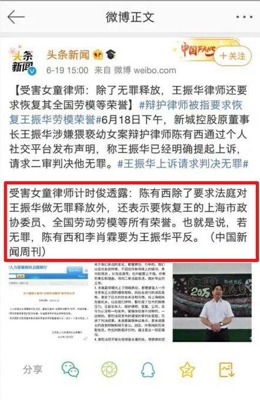
独俏逍遥：
导致九岁女童阴道撕裂，这在真正的法治国家是强奸罪中最重的一类；
要被终身监禁或化学阉割，即便出狱也要被强制隔离女童。
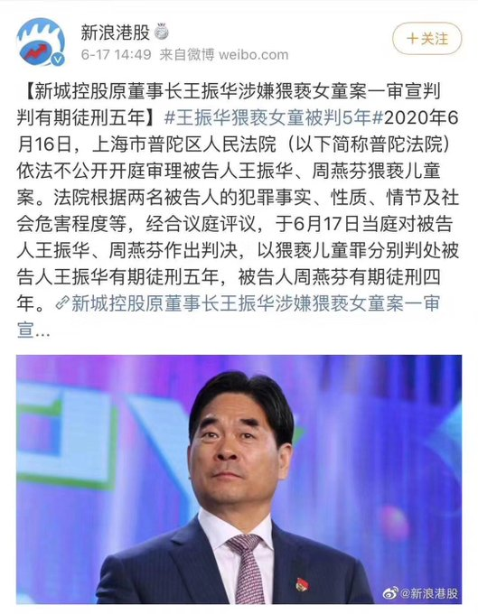
（编程随想注：以下是其它网友对这条推文的回复）
李承鹏：
凡拥有一张正能量嘴巴的，你一定要小心他其实藏着一根负能量的J巴。
这二巴，是这盛世流光溢彩的人形兽标配。
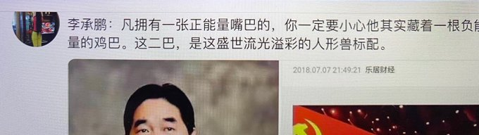
李承鹏：
然后，当王振华只以猥亵罪判了五年的好消息传到街市，新城股票暴涨了！
这些股民就跟没孩子似的。为了账户上可爱的盈利，他们愿意相信“一个千亿富豪花了10万元让好心的阿姨请了一个9岁小女孩到酒店，耐心辅导作业又教导如何做共产主义接班人”这个可爱的故事版本。
Jam：
照片上这位就是中共全国劳模、身价几百亿的王振华。
他一直“关心与支持少年儿童的教育事业”，经常深入基层或边远贫困山区的小学，捐书籍、文具等，
却是一个娈童犯，在上海一宾馆把一9岁女童的阴道弄破。
中共国，这样的伪善的坏人不少呢。
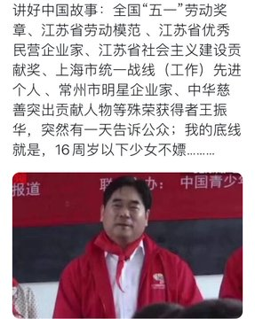 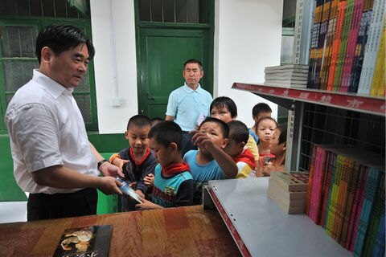 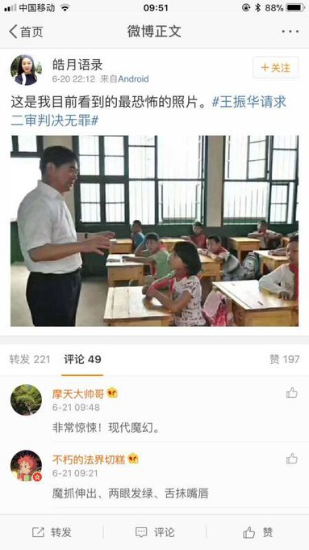
刘晓原：
去年六七月份，上海富商王振华面对媒体大谈“不忘初心，担当使命”“党建就是生产力”的问题。
今年6月17日，王振华被法院以猥亵儿童罪判刑5年。
没有机会再谈“不忘初心”！
 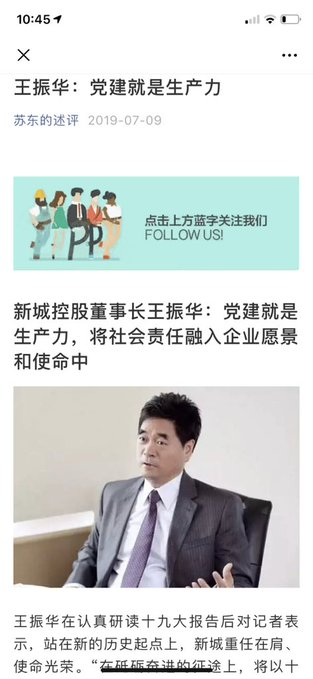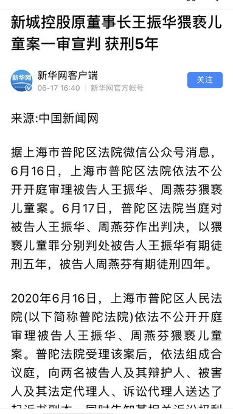
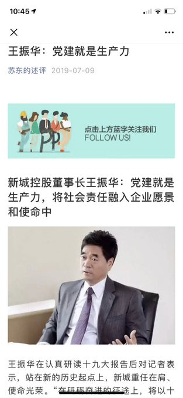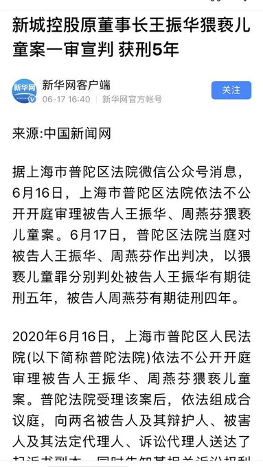
（编程随想注：以下是其它网友对这条推文的回复）
独俏逍遥：
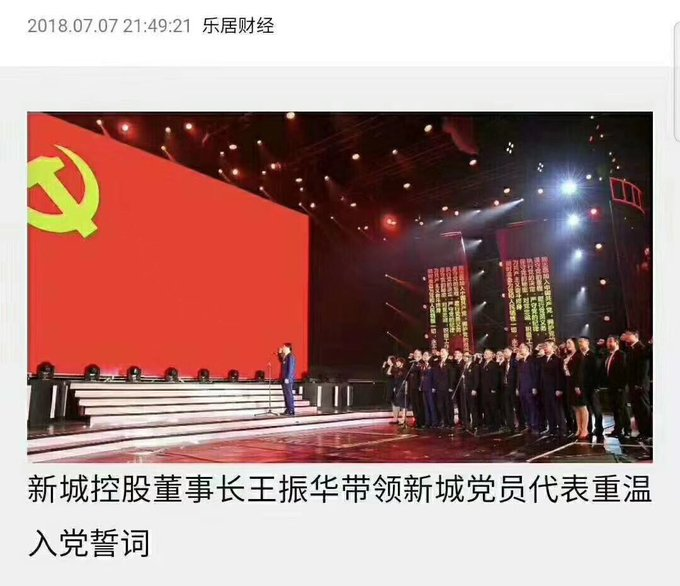
（编程随想注：以下是其它网友对这条推文的回复）
朱韵和：
【这是怎样的罪恶？！】
迄今为止，千亿富翁王振华和他的新城控股等公司，没有对那位身体受到严重伤害，构成轻伤二级的9岁小女孩，做出任何的赔偿，也没有任何安抚慰问举动。
连小女孩的身体治疗费及心理疏导费，都是由公诉方上海检方承担的……

野山：
王振华之所以咬定牙关否认猥亵了9岁女童，目的就一个，
只想维护其财富精蝇的社会地位，以便其能继续风光无限地作奸犯科。
躲猫猫：
所谓弱势群体，就是有些话没有说出来的人。
就是因为这些话没有说出来，所以很多人以为他们不存在或者很遥远。
——王小波
纽约时报中文网：
周三，上海一家法院以猥亵儿童罪判处富豪王振华有期徒刑五年，去年夏天，他在被报道猥亵了一名9岁女孩后被拘留。
判决在社交媒体上引发愤怒声浪，许多民众认为判罚太轻。这起案件也引发了人们对中国对性侵儿童处理方式的反思。中国公开的儿童性侵案件数据被认为远低于实际。
社交媒体上王振华判决结果的新闻后面，一位用户的评论得到了最多的点赞：“五年出来后他还可以继续，孩子一辈子都有阴影了。”
一些人提到了律师鲍毓明的案子。鲍毓明被指控性侵一名14岁时被他非正式收养的女孩。
鲍毓明被免职，但没有受到犯罪指控。他否认存在过错。
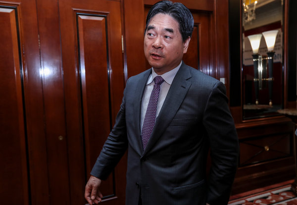
（编程随想注：以下是其它网友对这条推文的回复）
UNITED WE STAND, GLORY TO HK🇺🇸🇭🇰🖐☝️🔥☂️💥：
一拍三案：弱势群体早已沦为精英阶层的纵欲工具
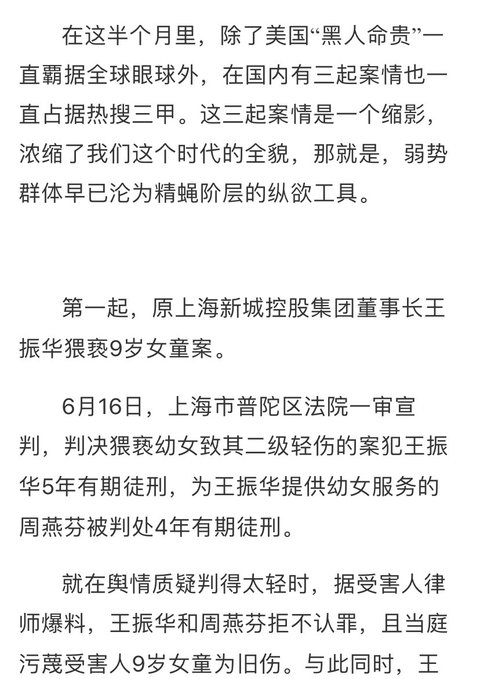 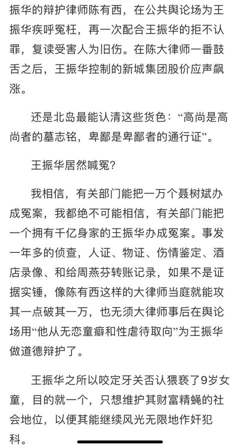 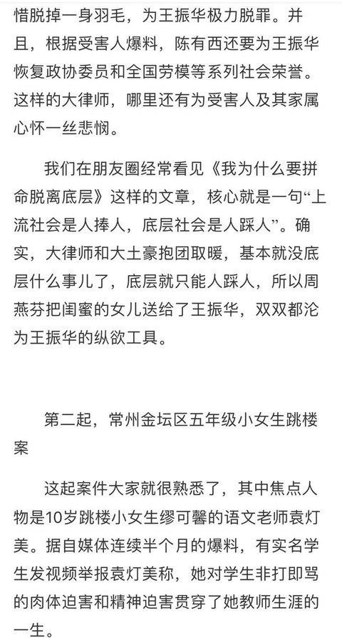 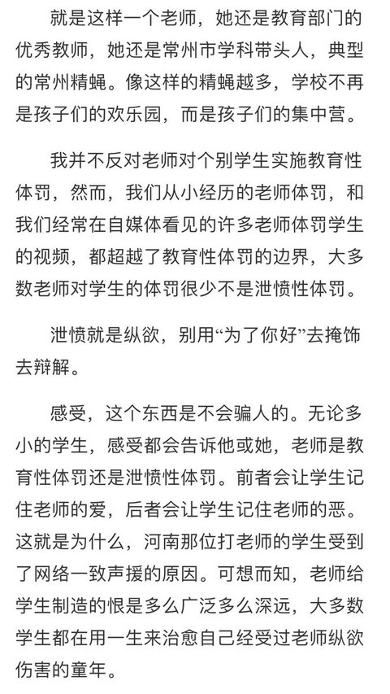
华人新闻：
你愿为他们转发吗？面对儿童性侵，沉默就是纵容！
#新城控股 董事长 #王振华。涉嫌猥亵9岁女童被刑拘。儿童遭受猥亵、性侵绝非个例。
仅2018年，媒体曝光的性侵儿童案例就有317起，受害儿童逾750人。
相比未曝光的，这只是冰山一角。#贵州毕节，那里是恋童癖的罪恶乐园。
对性侵零容忍，需要你我共同关注！
 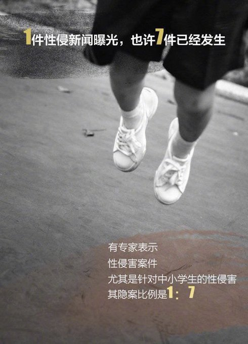
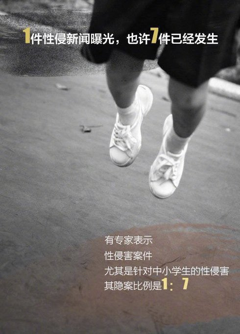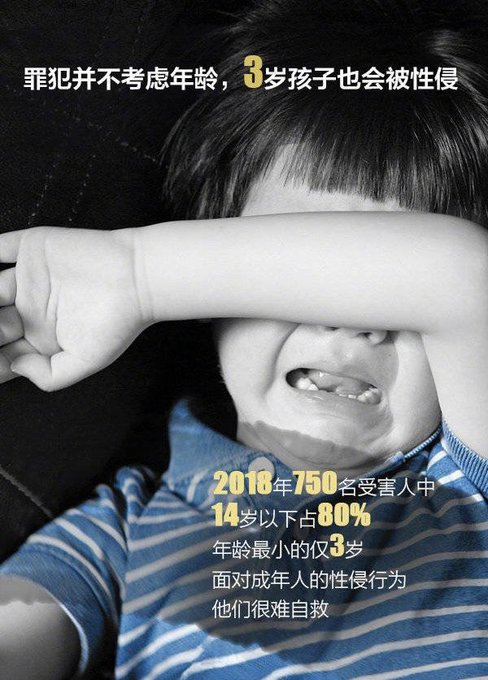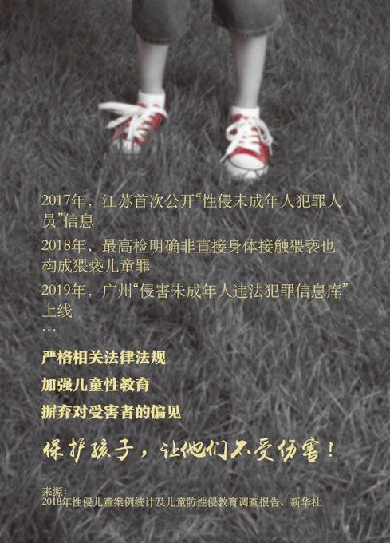
野山：
还有比未成年孩子更弱势的群体吗？没有了。
这国的小孩尤其小女孩，来到人间简直就是一场探险。
9岁躲过了王振华，10岁躲不过袁灯美。到了20岁又如何呢？
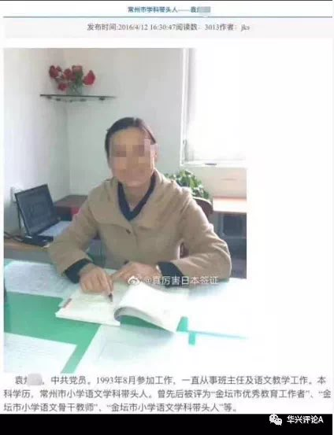
（编程随想注：以下是其它网友对这条推文的回复）
魔兽星球：
中国有钱人玩幼女是不是大面积存在的现象呢？
我在2000年初就听说，我所在的城市有钱人玩幼女，处女的事情。
见到女孩逼里流出的处女血，据说可以旺运红。
对方家长收个一万俩万，了事
大大大聪明托尼：
中国早就有N号房了，虽然不知道是在哪里直播，不过看过很多次的三个小女孩欠钱被逼迫轮着来的，
还有花钱找了个初中生就不停的在说老子的钱不能白花了的老混蛋，
都是以直播的形式在进行性侵，没办法，每天都要说炼铜（恋童）biss，还是有人以为是在开玩笑
风的颜色：
中国女童保护基金统计2019年公开报道的301起儿童性侵案，“中国教师”荣登榜首，是最大儿童性侵群体。
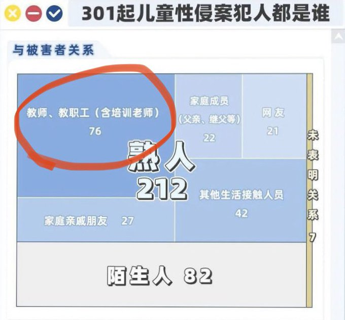
（编程随想注：以下是其它网友对这条推文的回复）
Handsome：
这位仁兄用的典是“天一案”。
芜湖县人民法院2018年10月31日以「制作和贩卖淫秽物品牟利罪」，判处她有期徒刑10年6个月并处罚金；
帮助她印刷和排版的何某也被判处10年6个月。
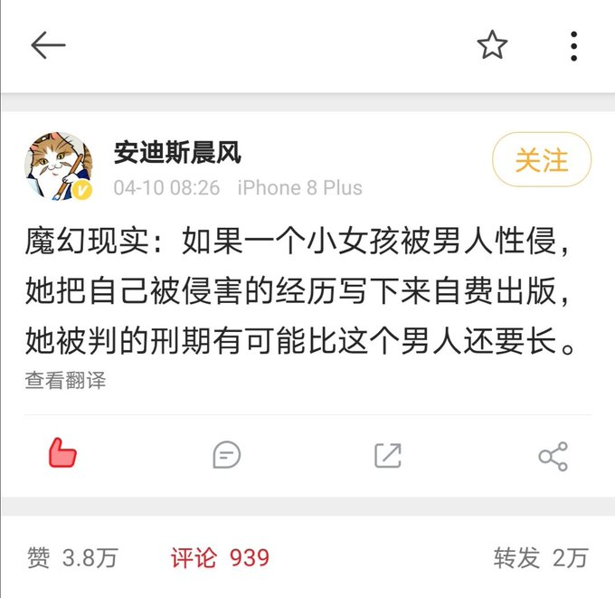
武汉普通人：
这个数据是第一次看到。
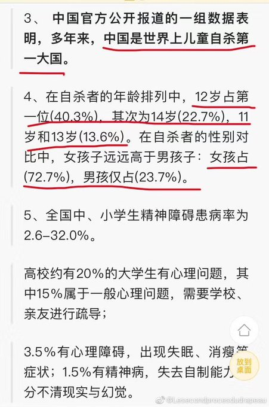
（编程随想注：以下是其它网友对这条推文的回复）
自由亚洲电台：
#陈有西: #王振华 嫖娼有底线，不碰十六岁以下少女
關堯 · Alston Kwan：
上海市普陀法院对新城控股原董事长 #王振华 涉猥亵儿童案一审宣判，判处有期徒刑5年。
其律师表示已上诉，请求二审判无罪。
王振华否认猥亵过本案女孩，称进出房间只有13分钟，有酒店录影证据，有效作案时间5分钟。
其律师称：王喜欢找年轻漂亮女性嫖宿，但16周岁以下的少女绝对不碰，这是他的底线。
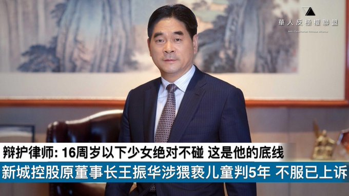
（编程随想注：以下是其它网友对这条推文的回复）
约翰：
原上海市伪政协委员王振华犯猥亵儿童罪判处有期徒刑五年。
王的辩护律师陈有西发出千字声明：王振华当然有错，他嫖娼的‘主观故意性是有的，但他16周岁以下的少女绝对不碰，这是他的底线。
王振华的律师要求对其无罪释放，并恢复上海市政协委员、全国劳模等荣誉。
网友认为王振华可以直接进入政治局。
（编程随想注：以下是其它网友对这条推文的回复）
未尝五味香粥：
全国“五一”劳动奖章、江苏省劳动模范 、江苏省优秀民营企业家、江苏省社会主义建设贡献奖、上海市统一战线（工作）先进个人 、常州市明星企业家、中华慈善突出贡献人物等殊荣获得者王振华，
突然有一天告诉公众：我的底线就是，16周岁以下少女不嫖。
聊发少年狂：
什么“不找16岁以下”，不少找吧！
那个那个拉皮条的为什么给他送一个9岁的小姑娘？
他为什么对9岁小孩“搂搂抱抱”？
沉默的力量The power of silence：
杭州市司法局优秀共产党员陈有西说：王振华是个有嫖娼底线的政协委员！
为我们有这么优秀的政协委员，这样有底线的共产党员点赞。
黑豆：
做人做事貴在有底線。而像王振华這樣能如此固執坚守底線的人已成稀缺奇貨。
著名律師陳有西若能為他成功翻案，只能证明中國司法采用了新的底線标准一一“王振华底線标准。”
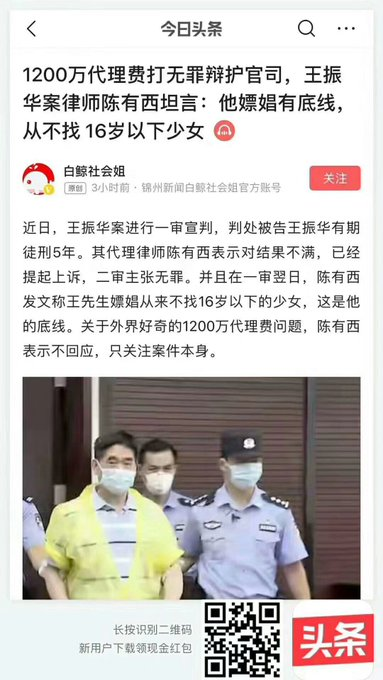 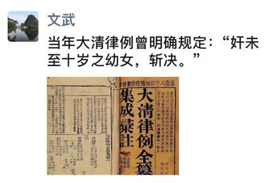
郝景芳：《王振华性侵幼女轻判和缪可馨事件让我痛苦心碎》
（编程随想注：以下是此文的摘录，全文参见“这个链接”）
黄少：
我并不关心陈有西律师是什么样的人，也不想得罪一个大律师集团的董事长。
说了这么多，分析了这么多，只是希望那些还关心本案的人，还关注法治建设的人，别再傻傻分不清楚了。
有些事情很简单，就像小学生繆可馨事件一样，不是批改作文的问题，不是抄袭作文的问题，你看到生命消失了吗？（叶开老师语）
这件事情也一样，不是有没有性器官接触的问题，不是有没有其他恶劣情节的问题，是你看一下摸一下就不行！（洪流律师语）
Peter Mei：
为啥没人骂检察院法院纪委党委？
（难道是）王振华给自己定的罪，判的刑？按照法律程序上诉有什么错？花100亿给自己辩护而不给受害人一分赔偿，违法吗？
都TM什么年代了，出这种事情还往道德上引，承认自己是个缩头乌龟就这么难？
厚德村人：
幼女，阴道撕裂，这不叫强奸？法官您能不能解释一下，为啥不叫强奸？
您先解释，然后，我给大家解释啥叫“有钱能使法推磨”。
LI雪夜上梁山：
这会儿，估计那个叫鲍什么明的上市高管，心中窃喜：
连王某人才判五年，他跟年满十四周岁的养女谈个不伦之恋，还不是芝麻绿豆大点事？
只是想对王某人说，
面对一个9岁的幼女（不知道是不是N个），你丫还真下得去手，把一个你孙女辈的女童，糟蹋至下体撕裂，你特么躯壳里还有一点点人性吗？
小札
@suxinPL
億萬富翁王振華，花了10萬元將一位9歲女童帶到賓館，給她講了13分鐘的故事。
然後，再花1200萬元請了陳有西律師，讓大家相信這件事是真的。
李 庆：
王振华猥亵女童案，去年到现在也没判决结果；（注：此推文发于2020年5月）
鲍毓明性侵未成年少女，一个多月也没定性；
梁岗性侵未成年男学生，也没有进展
......
处理王小妮教授，24小时之内就成立专项调查组。
——
前苏联有个女生报案被强奸了，警察不出警。
结果女生说，他强奸我的时候骂了勃列日涅夫同志（注：苏共总书记），警察立刻立案抓人 ......
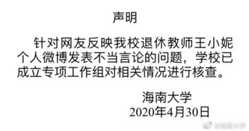
(兲朝)满朝权贵藏绿卡：
马勒戈壁，大学生掏个鸟窝判十年
强奸幼女并且撕裂幼女阴部的人居然才判了五年徒刑，
他不但强奸了幼女而且还强奸了法律。
（编程随想注：以下是其它网友对这条推文的回复）
Dayomoses：
贵国，写小黄文，判十年（我知道罪名是非法出版，但有的人洗地的借口就是对小孩影响不好）；
实际猥亵儿童，判五年。
（编程随想注：以下是其它网友对这条推文的回复）
躲猫猫：
空姐带货被判十年、大学生掏鸟窝被判十年半、连老太太摆摊打气球都被判了三年……
可一个性侵幼女、导致幼女器官撕裂的人渣只判了五年？
有钱人的律师果然不同凡响。强奸法律的地方果然不同凡响！
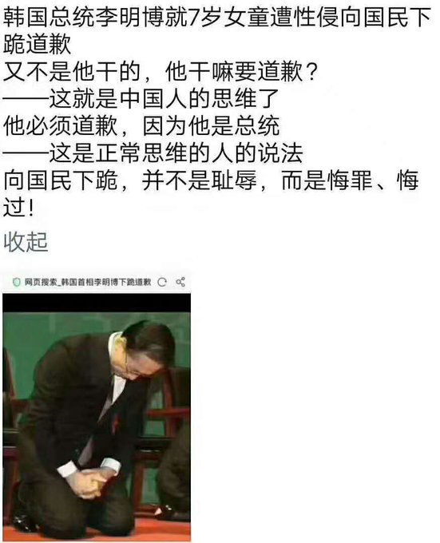
（编程随想注：以下是其它网友对这条推文的回复）
潘露（果皮工作室）：
【#和尚摸得我摸不得】
昨天强奸幼女的王振华董事长一审被判五年，是美帝奸幼恶魔刑期的2%；他还不服上述，要求二审无罪。
的确，和尚摸得我摸不得。官员嫖宿幼女都是公款消费，茶余饭后的炫耀资本。
红黄蓝幼儿园、毕节孤儿院都长期提供幼女为官员服务。
要怪就怪王董事长只专不红，不然肯定会党内嘉奖。

全智胜：
一個掏鳥蛋的被判了十年，
一個寫黃文的被判了十年，
而造成9歲女孩陰道撕裂的
竟然只是猥褻，最後只判五年！
他就是新城控股董事長王振華
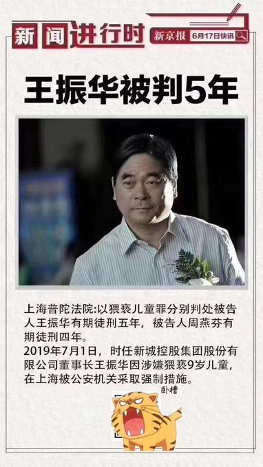
（编程随想注：以下是其它网友对这条推文的回复）
荒漠求生（凤）：
自古就有条文，强奸幼童者，死。
清律除沿袭明律外还额外规定，强奸12岁以下1O岁以上判死缓（秋后问斩），10岁以下判斩立决
到了后清，法律，只能呵呵了……
真理ノ人：
该开放的时候，写本小说判10年；
真强奸幼女的时候了，你告诉我这是9岁女童卖淫，你情我愿的，不属于犯罪。
happyhappy002：
写小黄书判十年
所以意淫比强奸判的重
老柴：
【康佰馨大药房售假3M口罩案一审宣判 董事长李东获刑15年】
北京市朝阳区法院判决李东等3位被告销售伪劣产品罪成立，判处李东有期徒刑15年。
同案犯李俞章、罗涵毅，亦被判有期徒刑若干年。
三位被告均表示将上诉。 https://Lvv2.com/t/2429370/
必须上诉，王振华才5年！
Micheal：
在清代，奸污幼女者，斩立决；
在美国，只是发个短信给九岁女孩的母亲说想睡她女儿，判30年；
在大鸡国，幼女阴道撕裂，说是猥亵！
它们发明了一个独步天下，饱含中国传统智慧深具中国特色的罪名：嫖宿幼女罪。
这个罪名谁发明的？中华人冥共和国最高院副院长，糟蹋无数幼女的淫魔，黄松有。嫖幼？嫖nmlgb
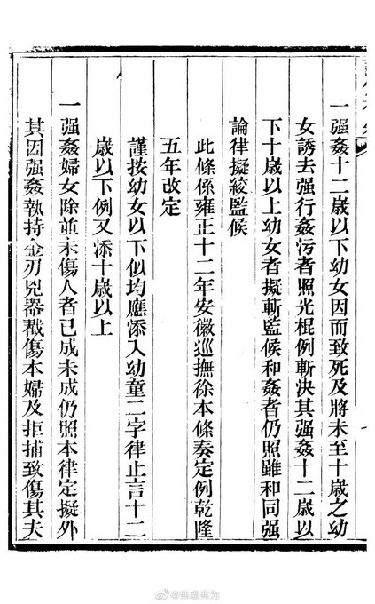 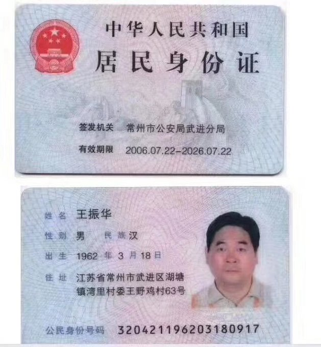 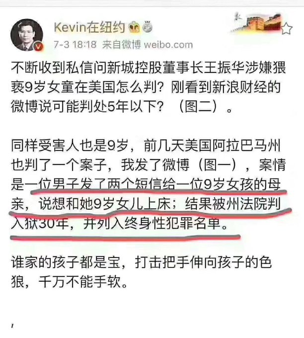 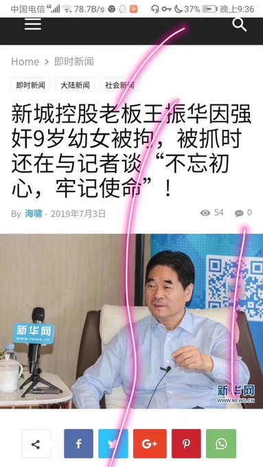
（编程随想注：以下是其它网友对这条推文的回复）
Tina822：
强奸儿童的董事长王振华被判五年……
在一个金钱和权利大于法律的国家很稀奇吗？……
这样受害者肯定不少，厉害国只是个人治社会而已。
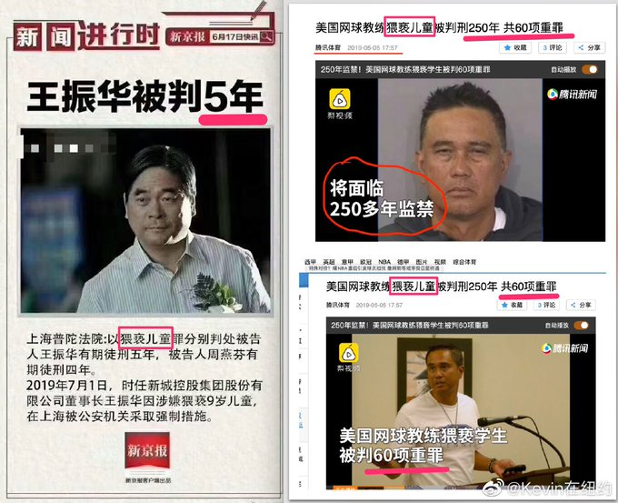 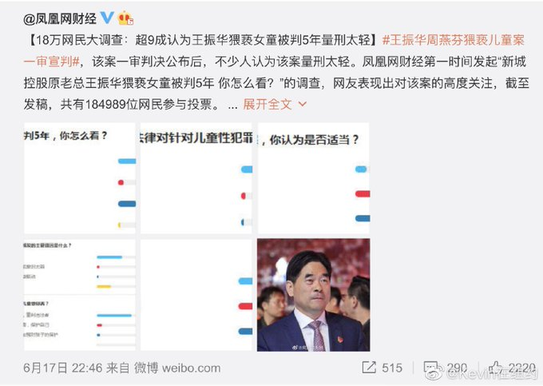 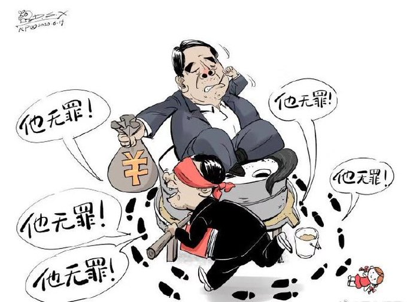
（编程随想注：以下是其它网友对这条推文的回复）
横眉：
看看美国和中国在保护儿童身心健康问题上的区别！就能明白是社会主义好还是资本主义好了？
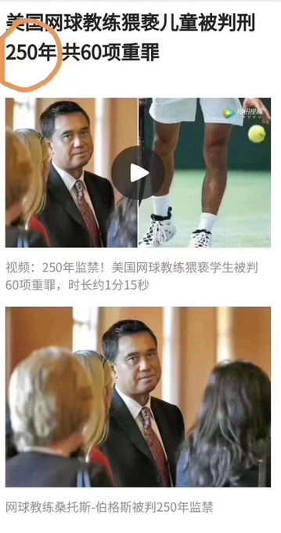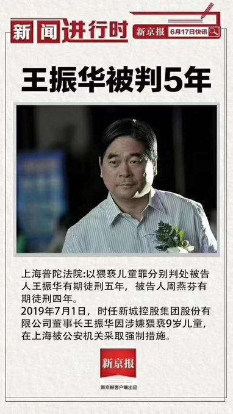
Qiao Mu：
上海大富豪王振华，猥亵9岁女童，一审5年。
美国呢？去年4月收到美国学校的邮件，图一二是翻译和原文，说抓了一个校车司机，持有儿童色情照片。
图三本地媒体报道，54岁的龌蹉男。今年2月宣判：27年3个月，另罚3万美元。罪名是拍摄未成年身体，持有和扩散照片。
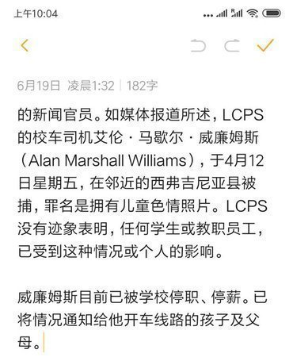
滕彪：
拿钱辩护不违法，但陈有西并非人权律师，而是官方律师。
当局打压人权律师时，他写文章批判人权律师。
在王全璋的案件上，他就是官方确认的勾兑律师。
王的家属找的律师都被官方拒绝，长达两年多，但官方信任陈，就让他来介入。
陈在王振华案的表现也严重违背职业伦理。

Bigbrother1984：
這個律師叫陳有西，中共優秀黨員，曾做過中共國的法官，後來利用關係做了中共國的律師。
這位優秀黨員曾經代理過夏俊峰的抗暴案，做的是有罪辯護，其說是為當事人負責。
這位優秀黨員還代理了一位嗜好強姦幼女的中共黨員，做的是無罪辯護，其說是為當事人負責，並說這位中共黨員強姦時是有底線的。
王局志安：
写小黄文判刑十年，一个上市公司老总猥亵9岁女孩导致阴道撕裂，只判五年。
他的律师当庭说只是嫖娼，要求判无罪。还要求恢复全国劳模。
这位律师叫陈有西，有消息说他接的这案子有激励机制，保底7位数，如果目标达到，将会拿到1200万人民币报酬。
葛永喜律师：
陈有西律师最近又火了——激起众怒。
但今天看到朋友圈一篇文章，作者是一名律师，建议立即逮捕陈有西。
我虽一向反感陈大律师，对他的《声明》嗤之以鼻，但认为这种（立即逮捕的）说法太过了。
无论被告人如何罪大恶极，都有权获得律师辩护。
这是文明社会，法治国家的重要标志。我一向视路易十六的辩护律师马尔泽布为楷模
石扉客：
到现在为止，必须说一句，关于王振华案的所有讨论，律师伦理恰好是最表层也最欠公共价值的，这个问题的争议在20年前就已经解决了。
公共讨论应该绕过这一层，直接深入，有想法和有能力的媒体也应该这么做。
（编程随想注：以下是其它网友对这条推文的回复）
猫神【猫眼看中国】：
我很奇怪：王振华当然是死有余辜，但为什么要谴责律师？这算是道德绑架义和团大师兄吗？
判决王振华有没有犯罪的是法院，律师的天职就是为当事人开脱。
不应该管当事人什么身份，如果律师钻了法律空子，开脱成功，说明法律有漏洞，自己水平高。
律师不为当事人服务，我们要律师干什么？这是什么混账逻辑？
（编程随想注：以下是其它网友对这条推文的回复）
faith over fear：
律师收了高额律师费，良知何在？
律师的工作本来就是辩护，无论开出多少律师费，都无可厚非。
律师可以辩护，但审判结果在法官和陪审团。
法官如果判此人无罪，那才是有问题的。
不追究法官和陪审团而追究律师是为什么？
编程随想注：
咱们天朝是大陆法系；而“陪审团制度”仅限于“海洋法系/英美法系”。
俺正好在本月初写过一篇【法学扫盲】。感兴趣的同学可以去看看。博文如下：
《如何理解“英美法系”（普通法系）——从“英国古代史”聊到“香港国安法”》
古拉格Gulag共和国：
御用大律师陈有西技冠中西，估计在有钱人的世界赚了不少钱……
就差让受害的女童给王振华下跪道歉了。

（编程随想注：以下是其它网友对这条推文的回复）
野山：
王振华的律师要求对其无罪释放，并恢复上海市政协委员、全国劳模等荣誉。
网友认为王振华可以直接进入政治局。

（编程随想注：以下是其它网友对这条推文的回复）
（编程随想注：以下推文发表于 2019年7月初，也就是王大色狼刚被抓的时候）
方舟子：
对性侵儿童的嫌犯上海媒体居然还要替他隐姓埋名，而且不准报道？考虑得真周到。
应该像《财经》那样公布其姓名、照片，而且还应该向美国学习，定罪后永远登记在册，他以后跑到哪显示在哪。
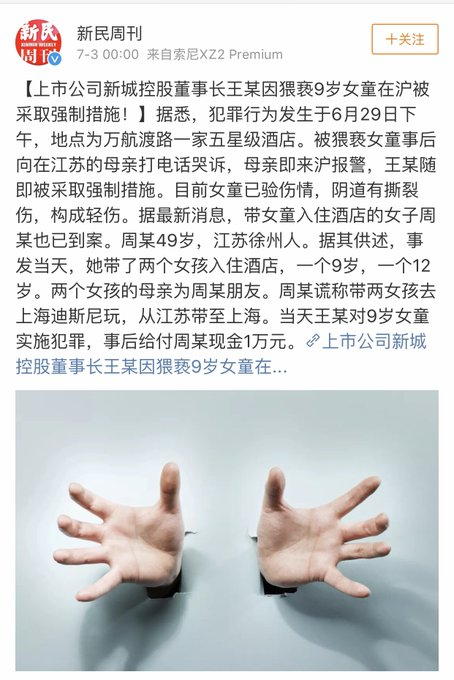 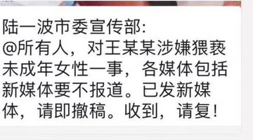 
李子佛：
上海市委宣传部新闻处，副处长，陆一波，为新城控股老板王振华开脱，要求上海媒体撤稿。
目前，上海《新民晚报》、澎湃新闻，都已经撤掉王振华猥亵女童的网络新闻稿件。
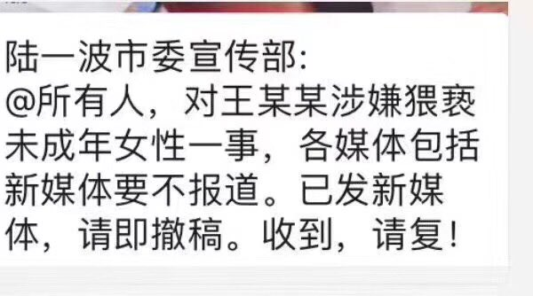
李子佛：
认真查查“删帖”背后的黑幕和利益链。
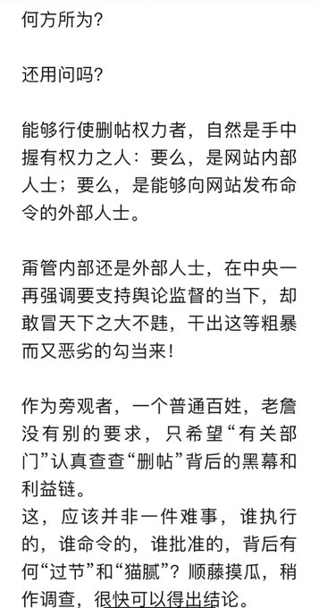
方舟子：
这个大律师居然不知道有一种变态叫恋童癖，为王振华辩护的理由居然是他不可能对小孩感兴趣。
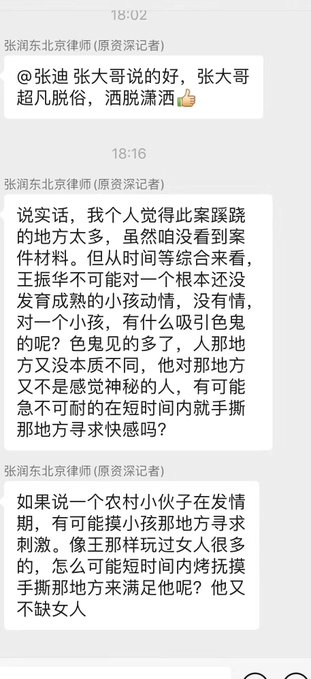
（编程随想注：以下是其它网友对这条推文的回复）
何方美（侠女十三妹）：
一位疫苗男家长替王振华猥亵幼女叫冤，说有人想害他才找的幼女，并说嫖娼最多刑拘罚款。
律师文章里写的明明白白也换不醒他的思考！
其女儿疫苗致残多年，一直没见维过权或朋友圈公开孩子遭遇，天天卖他的牛肉丸，自称尽力做一个负责任的父亲…
如果不是维权，真不想与众多岁月静好者为伍！
我无法呼吸
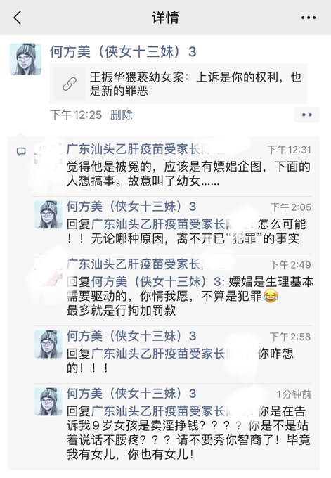
（编程随想注：以下是其它网友对这条推文的回复）
Murong Xuecun慕容雪村：
在安稳静好的日子里，许多人都会说『我站在鸡蛋那边』。
但事情真的发生之后，并不是每个人都能做出有同情心的选择。
Bright Future：
风向突变！高层发话！王振华二审极有可能判处死刑
Original 华夏 美好江苏 Today
连日来，王振华性侵幼女的案件持续发酵。
王振华被法院一审判决五年后，又花天文数字律师费，聘请国内金牌刑辩律师陈有西等，辩护目标直指二审宣判他无罪，并要求恢复他全国劳模等荣誉。
（编程随想注：以下是其它网友对这条推文的回复）
深眸：
王振华被判五年，律师陈有西放话二审要让王完全脱罪，并恢复政治荣誉，一时牛逼无两，民意更加愤怒，认为王''千亿资产''，就可以鱼肉百姓。
得，据说有高层放话出来，二审要让老王祭旗(判死罪)以平民愤，未知真假！
不过世事如棋，谁能预料呢！🙏
（编程随想注：以下是其它网友对这条推文的回复）
俺博客上，和本文相关的帖子（需翻墙）：
《如何理解“英美法系”（普通法系）——从“英国古代史”聊到“香港国安法”》
《分析“制度性腐败”——为啥天朝的贪官屡禁不止？》
《每周转载：携程托儿所虐童事件（各方评论及照片、视频）》
《每周转载：幼儿园集体服药事件和相关抗议活动（网文若干，照片多张）》
《每周转载：汇总未成年人被性侵被嫖宿的案件（38起，附图）》
《每周转载：关于＜编译局言情录＞的电子书、网文、网友评论》
《每周转载：关于雷政富（网文4篇，评论若干，图片若干）》
那些关注《回顾六四》系列的同学，别着急。俺争取本月发一篇。
前一篇博文刚发出，第二天（6月17日）就赶上“王振华案”宣判，本来很多网民就觉得此案判决太轻，再加上辩护律师陈有西发表了某些奇葩的言论，网上都炸锅了。
考虑到此案的影响很恶劣，俺先发一篇《每周转载》。而《回顾六四》系列的下一篇，又要延后了 :(
免责声明
因为墙内的封锁/审查太严重，本文汇总的网友评论，主要收集自 Twitter（推特）。俺收集的这些评论，有些是【陈述事实】，有些是【表达观点】。
对于【陈述事实】——因为内容很多，俺【无法】逐一验证每条的真实性。
对于【表达观点】——俺转载某条评论并【不】代表俺赞同或反对其观点，只是帮大伙儿了解墙外的舆论。
★写在前面的话
这篇有点长，而且图片很多。担心有些读者没耐心看到最后，把俺的点评写在本文开头。
下面这段话，引自7年前（2013）的一篇《每周转载》：
为啥天朝经常会有一些奇葩的法律？因为天朝的最高立法机关是【全国人民戴表大会】。从俺写下这段文字到现在，7年过去了。希望有更多读者能够意识到——
建议大伙儿读一下俺去年（2012）的博文《看看全国人大代表都是些什么货色——兼谈“议会道路的改良”行不通》看完那篇博文，你就明白“全国人大”里面，都是些什么玩意儿。
俗话说“屁股决定脑袋”，一帮权贵集团的人站在自己的立场上制定法律，他们搞出来的法律难道能维护底层民众的利益吗？不信的话，请看如下明显的对比：
官员财产公开，从胡耀邦时代说到现在，【30年没动静】；
网络实名制立法，2012年刚提出来，就在年底【闪电式通过】。
如果不推翻这个体制，【立法权】始终在权贵手中，那么法律只不过是在维护权贵的利益——这也就是“官员财产公开”迟迟【不】落实的原因。
这样的法律，同时也是为了更有效地镇压屁民的反抗——这也就是“网络实名制立法”闪电式通过的原因。
引用博客副标题“动态格言”的其中一句，与志同道合者共勉
我们生下来时，共产党就贪脏枉法/独裁专政/践踏人权/出卖国土——这是我们一代人的无奈；
等到我们的孩子长大了，共产党依然故我，甚至变本加厉——那就是我们这代人的无能！
★关于【王振华】的网友评论
计时俊律师：
案发当天，王振华给周燕芬许诺10万元，让她带一个小女孩到他的房间去，事成后将钱打给她。
没想到，周燕芬带了两个小女孩过来，一个9岁，一个12岁。
两个女孩的出现，出乎王振华意料，他让周燕芬将12岁女孩带去逛街。
在房间，他侵犯了9岁女孩。
独俏逍遥：
导致九岁女童阴道撕裂，这在真正的法治国家是强奸罪中最重的一类；
要被终身监禁或化学阉割，即便出狱也要被强制隔离女童。
（编程随想注：以下是其它网友对这条推文的回复）
李宗恒牧师：
多么无耻的判决，“强奸儿童罪”粉饰成了“猥亵儿童罪”！
Cyber Augustus：
明明是强奸幼女，还说是猥亵
andy-zhang：
这次没有按“嫖宿幼女罪”判案已经是万幸了。
赤匪国权贵的无耻和邪恶，继续刷新人类的三观
棄天大勝：
《未成年人保护法》这个时候又喂狗了
撕下他们的面具：
怎么的，人家还要上诉呢，非得改判无罪当庭释放。
赵国就是这样无所畏惧，无法可依
人微言轻：
这个还是好的。
上次一个（受害女童）她妈妈讨说法，直接关精神病医院。
709老木：
在伊斯兰国家会被石头砸死，在基督教国家会被判终身监禁。
wzduiren1：
在中国，被判了就是对P民的恩赐！
yavis：
然後，各種減刑，兩年就出來了
Citizen Peng：
此人如果有人脉，第二天就能搞定保外就医。
连五天都不用，就自由了。
freebird：
这种罪，放在美国的监狱里，是被万人蹂躏践踏的最底层。
地狱里有最水深火热的地方等着他。
Simonchen：
发生在一个号称“法治”国家的真实事件
Forest New：
不用怀疑！整个国家都是被制度性腐滥搞完蛋了！
人性堕落，无官不贪，
中将自由：
我算是明白了，法律都是对付老百姓的！
guluoma：
CCP国法律是用来保护有钱人的
Lily pery：
如果法律不能让人民感到安全，那么这法律就是用来羞辱人民的。
种秧首席评论员唐玛儒：
支持化学阉割
强哥：
还是物理阉割比较大快人心。
元月雪：
这种色狼王八蛋应该骟了他，否则他出狱后狗改不了吃屎还得祸害女性。
Timi：
对啊，直接割他的小鸡鸡
zoey：
其实这样的罪，如果是普通人肯定是死刑。
这完全是畜生
无越：
这是头什么样的牲口？
Mike：
我说错了，畜生不会做这样的事情。
全胜：
他戴的徽章，呵呵，人不如狗
刘刚：
他佩戴的是当下时兴的党徽
高战：
那枚耀眼的党徽，光芒四射啊！
苏橙：
长得好恶心啊，像《喜剧之王》里面那个耳朵冒蛆的家伙。
在厉害国有钱有关系的话，用不了五年就会找到借口出去
ray：
这人看长相应该是明朝倭寇在江浙沿海的后代
amelia：
这样的国家，那些赞美的人都没有良知
无名之辈：
犯罪成本如此之低……
救救孩子们！
bingbing：
我们大名鼎鼎的陈有西律师为王做无罪辩护。
看看这个国，是什么样的国？
荣子立：
建议女童父亲自己去寻求正义。
holly：
我要是女童的父母，在此生想办法阉割这牲口，然后再割下头颅。
鸭嘴兽2019：
家属有种的话可以选择复仇，可惜，不存在
安红粉丝2：
在国外，家长可以杀了他，陪审团会判家长无罪
leeanate：
今天，那个小时候被老师打，长大了在路上遇见了老师打了老师几个巴掌，被判了一年半的人出狱了。
强奸猥亵儿童判5年，打老师几巴掌，判一年半。
真搞不懂这法律
Charlie：
写小黄文的被判了十年零几个月。强奸幼儿的权贵惯犯，判5年。
独裁专制跟你谈法制
yxcyang627：
这在韩国能给他一个电影
李承鹏：
凡拥有一张正能量嘴巴的，你一定要小心他其实藏着一根负能量的J巴。
这二巴，是这盛世流光溢彩的人形兽标配。
李承鹏：
然后，当王振华只以猥亵罪判了五年的好消息传到街市，新城股票暴涨了！
这些股民就跟没孩子似的。为了账户上可爱的盈利，他们愿意相信“一个千亿富豪花了10万元让好心的阿姨请了一个9岁小女孩到酒店，耐心辅导作业又教导如何做共产主义接班人”这个可爱的故事版本。
Jam：
照片上这位就是中共全国劳模、身价几百亿的王振华。
他一直“关心与支持少年儿童的教育事业”，经常深入基层或边远贫困山区的小学，捐书籍、文具等，
却是一个娈童犯，在上海一宾馆把一9岁女童的阴道弄破。
中共国，这样的伪善的坏人不少呢。
刘晓原：
去年六七月份，上海富商王振华面对媒体大谈“不忘初心，担当使命”“党建就是生产力”的问题。
今年6月17日，王振华被法院以猥亵儿童罪判刑5年。
没有机会再谈“不忘初心”！
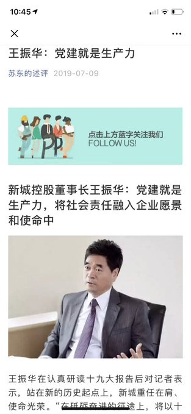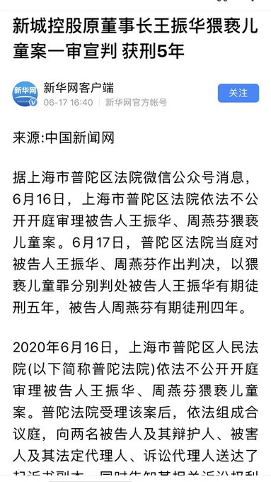（编程随想注：以下是其它网友对这条推文的回复）
冯超（冯滔滔）：
在某國的官場和商圈，姦淫幼女和幼童早已蔚然成風。
一方面，這些握著權、錢的人渣不再滿足於普通的性交易，會抱持獵奇心理，甚至性變態。
另一方面，由於某國政治黑箱化操作，官員迷信姦淫幼女幼童可以轉運。
所以某國經常傳出此類消息，官員、富商、教師醜聞不斷，甚至校長一詞都成了禽獸不如的代名詞。
張遠之：
仍然有機會：
1. 尚有上訴餘地；
2. 會想法減刑或刑外就醫；
3. 替身入監，自己逍遙法外。
Brant Shaw：
其实这届群众不懂人家说初心
潛伏敵營廿八年🏯介錯👊👊👊：
陳呦兮（陈有西）希望他接著談
naruto cheng：
他是江苏常州人，和儿子都玩过同一个女人。
欧力哥：
人模狗样的畜生
独俏逍遥：
（编程随想注：以下是其它网友对这条推文的回复）
Nathan🇳🇿：
奸最幼的女
干最坏的事
装最大的蒜
挣最黑的钱
songshiyou：
党的光辉形象代言人
Charlie：
他为我们诠释了“党性”的冰山一角。
东线有战事：
永远跟裆走，处女不愁有！
斐雪獨賞梅：
王振华这畜生就是共产党的形象表现—比正常逻辑的肮脏千倍
windflower：
无法用言语形容对这个党的厌恶。
CC：
什么叫信口雌黄，道貌岸然，禽兽不如……
所有这些中文词汇都不能详尽描述这个群体
人本：
知道党的组织，都是什么人了吧？都是伪君子的魔鬼。
表面伪善到大公无私，私下到侵害幼女无人性，基本兽性都不如。
T. N. T：
赤裸裸的羞辱共产党呢，网易评论啥的早炸了。
真以为民众瞎呢，很多话说出去看不到，是因为被删除而已。
估我唔到：
@duqiaoxiaoyao
睇到我血沸腾😁
近猪者吃：
王總是有底線的人！
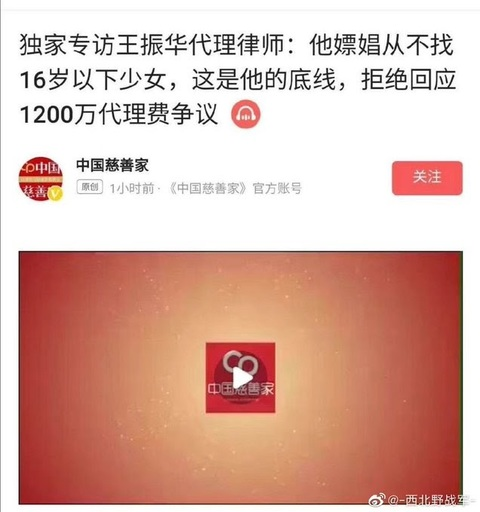
朱韵和：
【这是怎样的罪恶？！】
迄今为止，千亿富翁王振华和他的新城控股等公司，没有对那位身体受到严重伤害，构成轻伤二级的9岁小女孩，做出任何的赔偿，也没有任何安抚慰问举动。
连小女孩的身体治疗费及心理疏导费，都是由公诉方上海检方承担的……
野山：
王振华之所以咬定牙关否认猥亵了9岁女童，目的就一个，
只想维护其财富精蝇的社会地位，以便其能继续风光无限地作奸犯科。
★关于【儿童】这个弱势群体
躲猫猫：
所谓弱势群体，就是有些话没有说出来的人。
就是因为这些话没有说出来，所以很多人以为他们不存在或者很遥远。
——王小波
纽约时报中文网：
周三，上海一家法院以猥亵儿童罪判处富豪王振华有期徒刑五年，去年夏天，他在被报道猥亵了一名9岁女孩后被拘留。
判决在社交媒体上引发愤怒声浪，许多民众认为判罚太轻。这起案件也引发了人们对中国对性侵儿童处理方式的反思。中国公开的儿童性侵案件数据被认为远低于实际。
社交媒体上王振华判决结果的新闻后面，一位用户的评论得到了最多的点赞：“五年出来后他还可以继续，孩子一辈子都有阴影了。”
一些人提到了律师鲍毓明的案子。鲍毓明被指控性侵一名14岁时被他非正式收养的女孩。
鲍毓明被免职，但没有受到犯罪指控。他否认存在过错。
（编程随想注：以下是其它网友对这条推文的回复）
chengjincai 程金才：
任何一个正常国家，至少判50年！
可在西朝鲜，有钱，5年，两个月后保外就医，嘿嘿！
Flora潘：
中共向來如此。
幾年前一個地方官員強姦幼女，最後被定性為嫖宿——幼女被中共法律認定為是賣淫女。
還有一個案件，最終以“戴了避孕套就不算強姦”結案。
（编程随想注：“戴套不算强奸”成了当年广为流传的雷人语录。俺汇总了不同年份的雷人语录，参见“这篇博文”）
草泥馬：
何止是猥褻，這明顯是一條產業鏈，中國就是這樣的從不追根究底的調查。
那個騙小孩給他的人，明顯是產業鏈的最底端，負責騙小孩的，中間肯定還有人負責和這些有錢人勾搭
lion zhang：
共产主义的按需分配——就是按照权贵们的需要无限地满足权贵们的欲望。
这只是个有钱的富商而已，舆论民愤太大，不得不做个样子。
真正的核心权贵，再邪恶的勾当，也不会被暴露更不会展现在世人面前
包维尼扛麦螂：
居然判了五年，看来这位背景还是不够硬。
稍微硬一点的话，不然就是幼女全家被关，或者被抓精神病院才对。
Kigh：
相比爱泼斯坦的自杀谢罪，这个身为共产党员加人大代表的五毛猪标志性人物活生生的诠释了：什么叫牲畜和它们的主子怎么养牲畜的例子。
hiber：
这种人渣才判5年？强奸成年女性都会判10年以上。
看来这个国家的法律已经不能维护基本的公平和正义了！
政治犯你判罚不公正就算了，为何刑事犯罪也被人收买？
UNITED WE STAND, GLORY TO HK🇺🇸🇭🇰🖐☝️🔥☂️💥：
一拍三案：弱势群体早已沦为精英阶层的纵欲工具
华人新闻：
你愿为他们转发吗？面对儿童性侵，沉默就是纵容！
#新城控股 董事长 #王振华。涉嫌猥亵9岁女童被刑拘。儿童遭受猥亵、性侵绝非个例。
仅2018年，媒体曝光的性侵儿童案例就有317起，受害儿童逾750人。
相比未曝光的，这只是冰山一角。#贵州毕节，那里是恋童癖的罪恶乐园。
对性侵零容忍，需要你我共同关注！
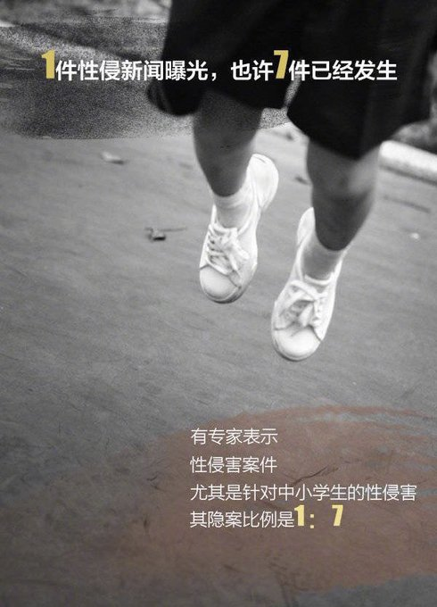野山：
还有比未成年孩子更弱势的群体吗？没有了。
这国的小孩尤其小女孩，来到人间简直就是一场探险。
9岁躲过了王振华，10岁躲不过袁灯美。到了20岁又如何呢？
（编程随想注：以下是其它网友对这条推文的回复）
qin gui：
20岁躲不过李刚、李双江他们的儿子！
联合国人权恶棍理事会：
当然躲不过小粉红，小粉红们行房之前都会问：
你爱不爱中国共产党？
你的政治立场是什么？
作为中国人骄不骄傲？
有没有发表过不利言论？
支不支持屠港屠台屠印？
游戏跟微信id有没有潜在反动隐喻？
魔兽星球：
中国有钱人玩幼女是不是大面积存在的现象呢？
我在2000年初就听说，我所在的城市有钱人玩幼女，处女的事情。
见到女孩逼里流出的处女血，据说可以旺运红。
对方家长收个一万俩万，了事
大大大聪明托尼：
中国早就有N号房了，虽然不知道是在哪里直播，不过看过很多次的三个小女孩欠钱被逼迫轮着来的，
还有花钱找了个初中生就不停的在说老子的钱不能白花了的老混蛋，
都是以直播的形式在进行性侵，没办法，每天都要说炼铜（恋童）biss，还是有人以为是在开玩笑
风的颜色：
中国女童保护基金统计2019年公开报道的301起儿童性侵案，“中国教师”荣登榜首，是最大儿童性侵群体。
（编程随想注：以下是其它网友对这条推文的回复）
奭：
比例还要大，更多老师作案的结果是不公开。
Ralph Wills：
只是台面數目，台底可能是百倍｡一如疫情數字！
Jason Voorhees：
当女童长大了，写下了被侵犯的过程，被判处有期徒刑10年，而加害者仅仅判了5年。
Handsome：
这位仁兄用的典是“天一案”。
芜湖县人民法院2018年10月31日以「制作和贩卖淫秽物品牟利罪」，判处她有期徒刑10年6个月并处罚金；
帮助她印刷和排版的何某也被判处10年6个月。
武汉普通人：
这个数据是第一次看到。
（编程随想注：以下是其它网友对这条推文的回复）
波西米亚跑路预备：
以前中国妇女自杀率也是世界第一大国，90年代后允许农民进城打工了，农村妇女纷纷脱离家庭，自杀率直线下跌。
可惜儿童无处可逃。
Hugo：
1.5% 的天才直接被弄死
黑夫斯基：
可以說這是中國特色社會主義優越性之一嗎？
Oscar Yip：
是我的話也會想自殺吧
遥望大地：
曾经我差点也是那 72.7% 中的一个（实施了不止一次，未遂）
越长大越怀念：
教育再不改革……哎，每个人都苟延残喘而又无可奈何的活着，马勒戈壁的！
Mrz：
这是教育的事嘛？整天盯着芝麻看。
我来教你打太极：
中国当今的未成年人问题原因 = 中国的独党专政 ＋ 中国的教育体制 ＋ 父母的不作为
★关于王振华所谓的【底线】
自由亚洲电台：
#陈有西: #王振华 嫖娼有底线，不碰十六岁以下少女
關堯 · Alston Kwan：
上海市普陀法院对新城控股原董事长 #王振华 涉猥亵儿童案一审宣判，判处有期徒刑5年。
其律师表示已上诉，请求二审判无罪。
王振华否认猥亵过本案女孩，称进出房间只有13分钟，有酒店录影证据，有效作案时间5分钟。
其律师称：王喜欢找年轻漂亮女性嫖宿，但16周岁以下的少女绝对不碰，这是他的底线。
（编程随想注：以下是其它网友对这条推文的回复）
联合国人权恶棍理事会🇺🇳：
就算判5年，极有可能是缓刑，就算坐牢也能不断花钱立功减刑，关系打通了直接保外就医去国外享受退休生活。
这就是香港人视如恶鬼的大陆法律
改天換日：
操你妈的底线！
W：
說句不碰就能脫罪，真可怕！
明明都進過他房間，還是怕別人笑他3秒男吧
Archer_ZMQ：
明明是少女强奸了王董！
pumkin：
Only 5 years?! He should be locked up forever
Chelsea🍑：
长得就很猥琐，恶心死了，变态
约翰：
原上海市伪政协委员王振华犯猥亵儿童罪判处有期徒刑五年。
王的辩护律师陈有西发出千字声明：王振华当然有错，他嫖娼的‘主观故意性是有的，但他16周岁以下的少女绝对不碰，这是他的底线。
王振华的律师要求对其无罪释放，并恢复上海市政协委员、全国劳模等荣誉。
网友认为王振华可以直接进入政治局。
（编程随想注：以下是其它网友对这条推文的回复）
疯狂老司机：
出埃及记：
我也觉得这资格够进政治局了。
Cooper：
我认为他可以做两高院长
十分之一：
我认为可以替代习近平
天亮 沐浴阳光 干死邪恶CCP：
直接当主席吧！
宏彦：
这个作恶级别虽已让人愤怒，但离政治局成员作恶级别还有一定差距！
lluyuli：
进政治局的话，道业还不够。还得继续努力。
kun：
想入常还得更邪恶点
軟綿綿：
网友认为王振华可以直接进入政治局。
条件：先割了丫挺的鸡鸡。
Donald QiuQiu：
五年太重了……直接把他交给受害儿童家长十分钟就够了……
未尝五味香粥：
全国“五一”劳动奖章、江苏省劳动模范 、江苏省优秀民营企业家、江苏省社会主义建设贡献奖、上海市统一战线（工作）先进个人 、常州市明星企业家、中华慈善突出贡献人物等殊荣获得者王振华，
突然有一天告诉公众：我的底线就是，16周岁以下少女不嫖。
聊发少年狂：
什么“不找16岁以下”，不少找吧！
那个那个拉皮条的为什么给他送一个9岁的小姑娘？
他为什么对9岁小孩“搂搂抱抱”？
沉默的力量The power of silence：
杭州市司法局优秀共产党员陈有西说：王振华是个有嫖娼底线的政协委员！
为我们有这么优秀的政协委员，这样有底线的共产党员点赞。
黑豆：
做人做事貴在有底線。而像王振华這樣能如此固執坚守底線的人已成稀缺奇貨。
著名律師陳有西若能為他成功翻案，只能证明中國司法采用了新的底線标准一一“王振华底線标准。”
★关于本案的【罪名】
郝景芳：《王振华性侵幼女轻判和缪可馨事件让我痛苦心碎》
（编程随想注：以下是此文的摘录，全文参见“这个链接”）
这件事大家都觉得“判轻了”，但是这个结果问题出在哪里呢？
第一种观点是：检察官起诉的罪名就有问题。
昨天看到段万金律师的一篇分析，认为检察官没有以强奸幼女罪起诉，本身就是一定的失职或者退让。这个案件原本有一些漏洞，可以尝试以强奸罪起诉的，起诉不成再按轻判，现在连检察官都只是起诉猥亵女童罪，顶级判罚也只是5年而已。
这个分析是客观而克制的，没有把检察官的退让归咎于个人或制度，只是客观地分析了这个案件呈现出来的证据和结果。
但不管怎么说，这个角度的分析是人的因素，认为是控辩操作造成了“轻判”结果。如果按照这个思路深挖，是需要了解整个案件调查和起诉过程的，这就不是一般人能轻易评论的。有匿名消息称，王振华辩方律师诉讼费达到三四千万，虽不知真假，但无论如何这个案子是大手笔的案件，应该是不错的。
就此打住，这个方向不能深挖了。
第二种观点是：猥亵女童罪的设置不够合理，这次就是钻了法律漏洞，悲剧但无奈。
持这种观点的人认为：目前我国刑法是按照“是否有性器官接触”这一标准区分强奸幼女和猥亵女童，本案的证据和被害人的证词，都确实不能证明有性器官直接接触，因此只能判猥亵女童。这种观点认为本案的审判没问题，只是刑法设置不够合理，需要通过改变立法，取消两种罪名的量刑差异，让猥亵女童罪的最高判罚等级提升。
这也是客观理性的分析，思路和证据也是基于现有呈现的信息，大致上也是说得通的。但这里面也有几个问题：
1）强奸幼女罪和猥亵儿童罪之间的区别，还包括一条“主观意愿”，看犯案人的“主观意愿”是不是强奸，但在这个案子中只字不提“主观意愿”，是怎么判定的？
2）凭什么性器官不直接接触就不叫强奸了呢？女孩子阴道有撕裂伤，不管是什么事物造成的，都是被强奸；
3）通过新的立法弥补漏洞，新的立法什么时候才能出台？
这一观点的深挖也得需要更多内部证据了，也还是就此打住吧。
第三种观点是我自己的观点：我国的法律从根本上就太不保护儿童了。
这是源于我在查找法律知识时的发现。我自己不是法律专家，因此所有谈论都需要非常谨慎谦卑。当我上网详细寻找有关“强奸幼女罪”和“猥亵儿童罪”的判定区别时，我无意中看到当初对于嫖宿幼女罪的辨析文章，里面写了一句让我震惊的话：
“虽然《刑法》规定强奸罪的‘顶格刑’是死刑，但一般只适用于3次以上并伴随暴力的极恶劣情况。根据《最高人民法院量刑指导意见》，强奸1次、仅涉及1名幼女的普通强奸，多数刑期只有3～5年。”
这篇文章是发表在《中国青年报》和《人民网》上的，并被多网转载，这里是链接：http://edu.people.com.cn/n/2012/0720/c1053-18560352.html。
是几年前的文章了，不知道这几年有没有翻天覆地的变化。

黄少：
我并不关心陈有西律师是什么样的人，也不想得罪一个大律师集团的董事长。
说了这么多，分析了这么多，只是希望那些还关心本案的人，还关注法治建设的人，别再傻傻分不清楚了。
有些事情很简单，就像小学生繆可馨事件一样，不是批改作文的问题，不是抄袭作文的问题，你看到生命消失了吗？（叶开老师语）
这件事情也一样，不是有没有性器官接触的问题，不是有没有其他恶劣情节的问题，是你看一下摸一下就不行！（洪流律师语）
Peter Mei：
为啥没人骂检察院法院纪委党委？
（难道是）王振华给自己定的罪，判的刑？按照法律程序上诉有什么错？花100亿给自己辩护而不给受害人一分赔偿，违法吗？
都TM什么年代了，出这种事情还往道德上引，承认自己是个缩头乌龟就这么难？
厚德村人：
幼女，阴道撕裂，这不叫强奸？法官您能不能解释一下，为啥不叫强奸？
您先解释，然后，我给大家解释啥叫“有钱能使法推磨”。
LI雪夜上梁山：
这会儿，估计那个叫鲍什么明的上市高管，心中窃喜：
连王某人才判五年，他跟年满十四周岁的养女谈个不伦之恋，还不是芝麻绿豆大点事？
只是想对王某人说，
面对一个9岁的幼女（不知道是不是N个），你丫还真下得去手，把一个你孙女辈的女童，糟蹋至下体撕裂，你特么躯壳里还有一点点人性吗？
小札
@suxinPL
億萬富翁王振華，花了10萬元將一位9歲女童帶到賓館，給她講了13分鐘的故事。
然後，再花1200萬元請了陳有西律師，讓大家相信這件事是真的。
★国内不同案例对比
李 庆：
王振华猥亵女童案，去年到现在也没判决结果；（注：此推文发于2020年5月）
鲍毓明性侵未成年少女，一个多月也没定性；
梁岗性侵未成年男学生，也没有进展
......
处理王小妮教授，24小时之内就成立专项调查组。
——
前苏联有个女生报案被强奸了，警察不出警。
结果女生说，他强奸我的时候骂了勃列日涅夫同志（注：苏共总书记），警察立刻立案抓人 ......
(兲朝)满朝权贵藏绿卡：
马勒戈壁，大学生掏个鸟窝判十年
强奸幼女并且撕裂幼女阴部的人居然才判了五年徒刑，
他不但强奸了幼女而且还强奸了法律。
（编程随想注：以下是其它网友对这条推文的回复）
冯超（冯滔滔）：
曾有个外国人在研究了某国刑法及大量案件后，愤怒的对我说：
”X国到底是个什么国家？！买卖熊猫的人，判了无期徒刑；买卖受保护鸟类的人，判了10年有期徒刑；而买卖妇女、儿童的人，却只判3年，还是缓期执行。强奸儿童犯罪被称为‘嫖宿幼女罪’，难道他们还要污蔑被强奸的儿童是在卖淫吗？！“
我无言以对。
李一锋：
一个学生掏了一个鸟窝被判刑十年；
而一群贪官盗空了国库，还天天伟、光、正。
qiqigao：
韭菜多不值钱，动物反而稀少珍贵
狗命貴：
他是黨的人。
人家沒忘初心，搶劫強姦是本分。
wills：
如果跟土匪讲法律那就是自取其辱！看见不正义的事就让这帮畜牲去死！
violenttom：
受害的如果是我的孩子，我绝对追到天涯海角把这畜生给阉了
处女座上身：
有法律没依法
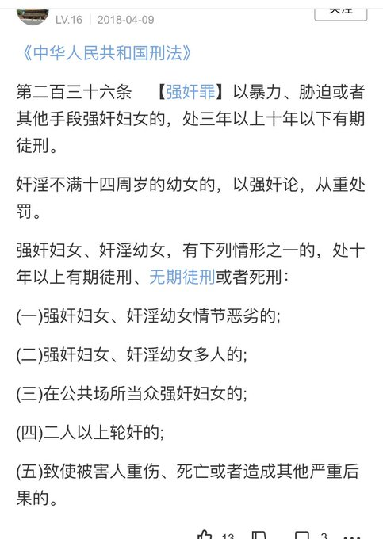
Robin yang：
中国啥时候有过法？
來跟隨我 我叫你們得人如得魚一樣：
如果法官是代表法律，
这不是強奸了法律，
是法律与他通奸了。
姜涩琪：
法律就是卫生巾，用的时候涂一下，不用就丢
矢勤矢勇：
花春淫在外交部上说，推特上充斥大量虚假信息，抹黑中国司法
Live2Learn：
厉害了，我的国
Sherdon J Plankton：
按照大明律历，他应该被吊死
Johnson：
关键看强奸了谁的女儿，如果强奸的是习公主，那就不是死刑这么简单了
zhishang：
唉，不知道怎么骂能解恨。
可能明面上判了五年，一转眼已经送到国外旅游了，继续逍遥自在，只要不被看到就行了。
中共体制内邪恶到顶点了，只是为了愚弄下人民口舌而已走个过场，这事发生太多了。
谁能监督到执法过程，没有，唉，没用，如何消灭中共？？？？
于无声处听惊雷：
我打听了一下，这样的案件，陈有西这种人肯代理，那就绝对不是这个宣判的法官自己定的刑期。
这案件十有八九是高级法院院长去定，搞不好最高法的几个人也参与。
Dayomoses：
贵国，写小黄文，判十年（我知道罪名是非法出版，但有的人洗地的借口就是对小孩影响不好）；
实际猥亵儿童，判五年。
（编程随想注：以下是其它网友对这条推文的回复）
There4Iam：
說真的，如果陰道撕裂都只算猥褻，
這國真的有「強姦」這個標準嗎？🤷🏻♀️
蓝罐百事可乐：
导致幼女阴道撕裂了。在我看来这种应当以强奸论罪，不知法官是怎么想的，以猥亵论罪。
LLLLove：
他们还会说“影响程度不一样”…呕吐
Ceci：
而且無罪的多了去了，至少有八成性侵案沒有上報
Every Joes：
法庭認定猥褻兒童罪僅判刑5年
毒奶粉 假疫苗致殘致死事件不斷
誘拐販賣兒童縷縷發生，
上學洗腦 升學壓力 補習不盡 跳樓輕生 校園暴力 校外恐襲。。。
牆國的父母要心多大才能有勇氣在牆內生養自己的孩子
躲猫猫：
空姐带货被判十年、大学生掏鸟窝被判十年半、连老太太摆摊打气球都被判了三年……
可一个性侵幼女、导致幼女器官撕裂的人渣只判了五年？
有钱人的律师果然不同凡响。强奸法律的地方果然不同凡响！
（编程随想注：以下是其它网友对这条推文的回复）
王大麻子：
还有一个广西喜欢军械的小伙子网购了几只玩具枪，
还没送到家就被抓了，判了个无期
pandapandapanda：
还不如大清
繁星若塵：
所以，也請不要將中共國稱作“後清”，根本不配！
Ben：
如果还把CCP当人看，那说明你已经处在危险之中！
如果你还认为中共国有法，那就是在拿自己的生命开玩笑！
如果你还认为CCP坚不可摧，那就是你在拿自己的未来做赌注！
袁野：
匪夷所思的事情多了，2017年江苏徐州一男子捉奸被判寻衅滋事，还遭对方勒索十五万，
只因对方是我党政法委员！
JANE Lau：
因为共产党高层太多变态恋童癖，黑暗龌龊禽兽不如。
如果不推翻共产党，世界儿童遭殃！
等墙倒了，大家静待奇葩们的丑恶
梁家河生产大队低保户：
强烈要求包帝下跪谢罪天下！
强烈要求按清律斩决那厮！
秋思：
我一直觉得墙国的“嫖宿幼女罪”才是公开彻底的反人类法律
明明是权贵相信封建留下的搞幼女养生等一系列文明糟粕，还他妈居然公开打着保护幼女的旗号！
幼女既然心智不成熟，何来卖淫？
中共这帮灭绝人性的王八羔子
南馆潇湘：
这是一个畜生遍地的黑暗国度！
sandy：
荒唐的國度，一直宣称依法治国
推墙看世界：
依法嘛，好解释，一切跟中共党走，中共就是法，最后还不是它说了算
Cara：
确实不明白～五年是哪个没良心的判的～
就这，人家还不满意，还要上诉，要判无罪呢～
明夷：
刑不上大夫的另一种阐释。
潘露（果皮工作室）：
【#和尚摸得我摸不得】
昨天强奸幼女的王振华董事长一审被判五年，是美帝奸幼恶魔刑期的2%；他还不服上述，要求二审无罪。
的确，和尚摸得我摸不得。官员嫖宿幼女都是公款消费，茶余饭后的炫耀资本。
红黄蓝幼儿园、毕节孤儿院都长期提供幼女为官员服务。
要怪就怪王董事长只专不红，不然肯定会党内嘉奖。
全智胜：
一個掏鳥蛋的被判了十年，
一個寫黃文的被判了十年，
而造成9歲女孩陰道撕裂的
竟然只是猥褻，最後只判五年！
他就是新城控股董事長王振華
（编程随想注：以下是其它网友对这条推文的回复）
OTUKI：
还有买仿真枪被判死刑，一顿上诉改判无期的......
翻墙神器金刚梯：
说明：在CCP眼里，9岁女童不如1只鸟蛋！
DT挑战：
这就是粉红们义和团们爱的政府，因为只要有权有权可以站在法律之上。
樊华：
這就是中國的法律。法律是約束窮人的。治理國家的。但是並不是保護民眾的。
白日梦：
本来政府就不是民选的，你还指望它为民服务？
维持基本生活需要，继续被它敲骨吸髓罢了
華耀四海：
權力不僅是最好的春藥還是一塊免死金牌
黑暗骑士：
有免死金牌在，五年都太多了
德先生：
这就是中国！
荒漠求生（凤）：
自古就有条文，强奸幼童者，死。
清律除沿袭明律外还额外规定，强奸12岁以下1O岁以上判死缓（秋后问斩），10岁以下判斩立决
到了后清，法律，只能呵呵了……
真理ノ人：
该开放的时候，写本小说判10年；
真强奸幼女的时候了，你告诉我这是9岁女童卖淫，你情我愿的，不属于犯罪。
happyhappy002：
写小黄书判十年
所以意淫比强奸判的重
老柴：
【康佰馨大药房售假3M口罩案一审宣判 董事长李东获刑15年】
北京市朝阳区法院判决李东等3位被告销售伪劣产品罪成立，判处李东有期徒刑15年。
同案犯李俞章、罗涵毅，亦被判有期徒刑若干年。
三位被告均表示将上诉。 https://Lvv2.com/t/2429370/
必须上诉，王振华才5年！
★同样是侵犯儿童，中美对比
Micheal：
在清代，奸污幼女者，斩立决；
在美国，只是发个短信给九岁女孩的母亲说想睡她女儿，判30年；
在大鸡国，幼女阴道撕裂，说是猥亵！
它们发明了一个独步天下，饱含中国传统智慧深具中国特色的罪名：嫖宿幼女罪。
这个罪名谁发明的？中华人冥共和国最高院副院长，糟蹋无数幼女的淫魔，黄松有。嫖幼？嫖nmlgb
（编程随想注：以下是其它网友对这条推文的回复）
Micheal：
不出所料，这厮是个惯犯
陈艳疫苗关注者：
多次开人民代表大会的时候，有代表提出取消嫖宿幼女罪，但多次没有成功。
因为这个罪名就是给当官预留的。他们知道党的裤裆，都是这样来的，所以故意保留这个罪名。。
GoldenCedar2020：
这种畜生杀一千遍都不为过
爱情猪：
美国一位受害人父亲亲手枪杀了凶手！
枪炮与玫瑰：
国外对恋童严厉打击，绝不手软。
就是过海关手机里被查出有脔童的图片或视频，都得取消签证甚至坐牢
Sin Jinling：
这货如果在新加坡只要触碰幼女阴道，哪怕是手指，也起码坐牢二十年外加鞭刑
南郡太守：
这个太无耻了 这种行为无论在哪里都是重罪 不可以轻判的

Tina822：
强奸儿童的董事长王振华被判五年……
在一个金钱和权利大于法律的国家很稀奇吗？……
这样受害者肯定不少，厉害国只是个人治社会而已。
（编程随想注：以下是其它网友对这条推文的回复）
共产党万岁：
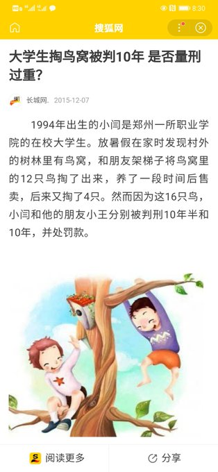
waqun95：
这是一个畜生。这个国度的法律更是婊子养的。
抓鸟判10年，挖个兰花就判好几年，穷人就不是人。
躲猫猫：
如果你有足够的权，一切的规则都是为你服务的。
如果你有足够的钱，任何规则都是可以变通的。
如何你没有权也没有钱，对不起，所有的规则都是为你制定的。
Jone Lee：
在一個黑白分明的事實面前，媒體上還要去討論……
是在強奸誰的智商
Kakaxi：
搞笑了，这要是无罪就真牛逼了
推墙马丁：
这就是制度的优越性吧？
至于民意，就是狗屎
Mr.0：
Tina822：
Find Unusual：
估计不到一年就出来了，意思意思
一杆黑枪搅大海：
五年活动活动几个月就出来了
Tarnowitz：
别当真！这个监禁五年，其实都是监外执行，（对外宣称监狱内执行）；
或者中共只是会把他放进监狱关押几个月就释放了，然后把他藏起来并派专人保护之；
或者指使这个人去海外生活五年逃避责任，躲开报复
Steve Sandvoss：
这货要是在美国犯这罪进入监狱的话他的日子绝对不好过。
横眉：
看看美国和中国在保护儿童身心健康问题上的区别！就能明白是社会主义好还是资本主义好了？
Qiao Mu：
上海大富豪王振华，猥亵9岁女童，一审5年。
美国呢？去年4月收到美国学校的邮件，图一二是翻译和原文，说抓了一个校车司机，持有儿童色情照片。
图三本地媒体报道，54岁的龌蹉男。今年2月宣判：27年3个月，另罚3万美元。罪名是拍摄未成年身体，持有和扩散照片。
★关于王振华的辩护律师【陈有西】
滕彪：
拿钱辩护不违法，但陈有西并非人权律师，而是官方律师。
当局打压人权律师时，他写文章批判人权律师。
在王全璋的案件上，他就是官方确认的勾兑律师。
王的家属找的律师都被官方拒绝，长达两年多，但官方信任陈，就让他来介入。
陈在王振华案的表现也严重违背职业伦理。
Bigbrother1984：
這個律師叫陳有西，中共優秀黨員，曾做過中共國的法官，後來利用關係做了中共國的律師。
這位優秀黨員曾經代理過夏俊峰的抗暴案，做的是有罪辯護，其說是為當事人負責。
這位優秀黨員還代理了一位嗜好強姦幼女的中共黨員，做的是無罪辯護，其說是為當事人負責，並說這位中共黨員強姦時是有底線的。
王局志安：
写小黄文判刑十年，一个上市公司老总猥亵9岁女孩导致阴道撕裂，只判五年。
他的律师当庭说只是嫖娼，要求判无罪。还要求恢复全国劳模。
这位律师叫陈有西，有消息说他接的这案子有激励机制，保底7位数，如果目标达到，将会拿到1200万人民币报酬。
葛永喜律师：
陈有西律师最近又火了——激起众怒。
但今天看到朋友圈一篇文章，作者是一名律师，建议立即逮捕陈有西。
我虽一向反感陈大律师，对他的《声明》嗤之以鼻，但认为这种（立即逮捕的）说法太过了。
无论被告人如何罪大恶极，都有权获得律师辩护。
这是文明社会，法治国家的重要标志。我一向视路易十六的辩护律师马尔泽布为楷模
石扉客：
到现在为止，必须说一句，关于王振华案的所有讨论，律师伦理恰好是最表层也最欠公共价值的，这个问题的争议在20年前就已经解决了。
公共讨论应该绕过这一层，直接深入，有想法和有能力的媒体也应该这么做。
（编程随想注：以下是其它网友对这条推文的回复）
James Ha：
皇帝（制度）不敢骂，只能骂骂太监（陈有西们）。
谜空：
责骂一个无所不用其极的律师是容易的事，这次陈有西出位的言论也许会起到反效果。
中国的法庭并不是只认法理，比法理优先的因素有很多，但不包括律师的辩护意见。
一个荒谬的判决并不是因为律师辩护得力而成，问问检察是否真的想告，法院是否真的想判吧。
liubinjanus：
我觉得存在漏罪，公安局与检察院有渎职嫌疑。
xk：
认同此论断。问题在于，骂律师比较安全，也能受官方和普通人欢迎
Damao Woo：
没人敢。只有喷律师了，安全。
猫神【猫眼看中国】：
我很奇怪：王振华当然是死有余辜，但为什么要谴责律师？这算是道德绑架义和团大师兄吗？
判决王振华有没有犯罪的是法院，律师的天职就是为当事人开脱。
不应该管当事人什么身份，如果律师钻了法律空子，开脱成功，说明法律有漏洞，自己水平高。
律师不为当事人服务，我们要律师干什么？这是什么混账逻辑？
（编程随想注：以下是其它网友对这条推文的回复）
XunLongJi：
让王振华轻判的是法官，而不是律师。
在中国，庭审中律师起的作用，与他的辩护人给法官行贿金额的数量成正比，而证据确不确凿关系不大。
律师真的这么牛掰，就不会有709了，就不会有律师卖老鼠药，上街乞讨了。
邪恶的不是陈有西，而是国无法！
Wuhan Virus：
一个法律完善的国家，律师这样没有问题。
在中国，一切听党，律师大有问题。
西野芳菲：
你说的是司法独立的大前提下的律师。
失望的晨曦-忏悔的路西法：
你是在一个党领导法的国家，一个独裁法西斯国家
在这样的国家，一个为强奸幼女的权贵辩护的律师
你用普世价值世界的道德观为他辩护？？？
胡双庆：
命题不错。
1. 杨金柱讲“律师是打麻将凑脚的，还不准胡牌”。陈有西肯定了解ccp的法里面的水有多深。
2. 就事论事辩护，没问题。与被告、公检法勾结就有问题。
此案是典型的勾结案，不然结果肯定不是这样。你让一个平民去犯这罪试试。
IamonMountains：
律师辩护也是要以证据为基础的，不能随意歪曲证据，
否则也是违背律师原则。
James：
可是律师不能散布有利于委托人的虚假言论，而且律师也应该有道德底线吧
叮铛猫：
大衆指責陳有西，并非因為他為王辯護。
而是此獠居然提出法院要給王恢复名譽，重回政協等等的超出司法管轄荒誕的要求，擊穿了人們的心理底綫。
大衆向來認為他為當局維穩而出賣靈魂，已經夠无恥。
但這次陳的表演，刷新了人們對他的認知。
zm chen：
辩护律师陈有西：王振华当然有错 但不碰16岁以下少女是他底线
哈哈哈 猫神怎么不看这种无耻的话
律师如何知道嫌疑犯的底线啊？
还有，据说陈有西说要帮王振华申请要回什么先进积极分子的称号。更加不可思议
pingjesse：
首先是一个人，才是一个士兵，才是一个警察，才是一个律师
Remington-雷明顿：
请你记住一点：在成为任何职业之前，什么医生，工程师，律师，你必须要先成为一个人！
成为一个人意味着要具备基本的道德操守，决不能为了钱给所谓的客户服务，为了钱去找法律的空档。
医术不等于医德，武术不等于武德，就是这个道理。
有案子不接的律师才是真的律师！
last exile：
同样的案子，看看韩国律师吧，没有一个人接的。这就是骨气！
CloudBook Schenn：
中国有脊梁的律师都被709或者剥夺律师证了。
Sandy：
有些律师是专门做这种黑心官司的，一为名气二为钱，良心和道德他们是不要的
中国大陆沦陷区人质Chinese hostage China slaves Liu：
拿了1200万为他辩护的，你就知道是不是一丘之貉了
Maria Takagi：
其实是检察院，猥亵罪最高5年，法院已经顶格量刑了。
提起公诉的是检察院。
连鹤：
为什么都骂陈律师呢？律师也只是在现有法律范围内活动，该骂的不应该是这个法律制度吗？？？
陈有西只是向我们展现了这个法律制度恶心的一面！
换成其他国家无论是强奸还是猥亵未成年女孩，无论对方是不是自愿，直接化学阉割判刑六十年起步不准保释。
这样的法律范围内就没有律师能帮他争取到几年刑期
SeekingTheTruth：
大家应该油管查询一下贺卫方的视频，就会知道中国现代 司法的极度不健全。
如何改革，得先灭掉中共体制，才有可能。
faith over fear：
律师收了高额律师费，良知何在？
律师的工作本来就是辩护，无论开出多少律师费，都无可厚非。
律师可以辩护，但审判结果在法官和陪审团。
法官如果判此人无罪，那才是有问题的。
不追究法官和陪审团而追究律师是为什么？
编程随想注：
咱们天朝是大陆法系；而“陪审团制度”仅限于“海洋法系/英美法系”。
俺正好在本月初写过一篇【法学扫盲】。感兴趣的同学可以去看看。博文如下：
《如何理解“英美法系”（普通法系）——从“英国古代史”聊到“香港国安法”》
古拉格Gulag共和国：
御用大律师陈有西技冠中西，估计在有钱人的世界赚了不少钱……
就差让受害的女童给王振华下跪道歉了。
（编程随想注：以下是其它网友对这条推文的回复）
申公豹：
按照《九品芝麻官》裡面的情節，女孩應該因為逼奸王振華而坐牢
Vladimir Stephen秋哥：
接下来：黄老秋老婆意图强奸林员外
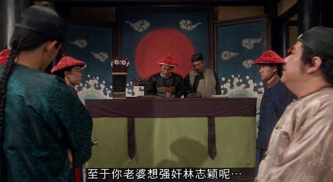
Daisyleunghf：
我是15年左右经常潜水在微博，那几年很多有良心的律师被抓被吊销执照，只有陈有西混得风生水起，
冰玉IceJade：
有良心的律师在监狱里
无良心的律师发大财
Daisyleunghf：
感觉陈有西太恶心了！！！
理科生：
感觉人们普遍厌恶律师为这种人辩护，但没人看到法律的漏洞，这才是真正的纵容。
Carol：
就该案，我能表达的愤怒，不在于事实到底是咋样。
而是，既然判猥亵儿童罪成立，竟然只判五年刑期，这显然是在纵容犯罪。
而对于写成人小说的，却选择了十年以上的刑期重罪。
这种法律执行的缺德程度，令人咋舌。
Mr.0：
法律这时候变笑话了
荒漠求生（凤）：
两年前鸿茅能让谭秦东认罪，
两年后发生什么也不是没有可能。
Otowa：
中国不是律师专业多厉害就能有好的判决结果的国家。
只能说，陈有西公检法白手套做的好。王振华背后的势力硬。陈有西只是公检法和王振华的狗而已。
野山：
王振华的律师要求对其无罪释放，并恢复上海市政协委员、全国劳模等荣誉。
网友认为王振华可以直接进入政治局。
（编程随想注：以下是其它网友对这条推文的回复）
赵岳嵩：
斩立绝的案子，愣是无罪释放的样子……
styraxemma：
看这意思，不嫖娼在中国是当不了政协委员和劳模的！
dean：
人以群分，进常委很合适
惨叫～人生：
强奸儿童的董事长王振华被判五年……
这样侮辱道德底线的新闻，在朋友圈都不激起愤怒的浪潮，哎。岁月静好！
在一个金钱和权利大于法律的国家不稀奇，这样下去罪犯更加肆无忌惮，厉害国只是人治社会而已。
他律师要求对其无罪释放，并恢复上海市政协委员、全国劳模等荣誉
觉得王振华可以直接进入政治局。
xzj：
如果“從來不找16歲以下少女”這番話真的出自陳有西之口，那陳有西就真是個畜生雜碎.
Expect revolution：
陈有西是典型的官方豢养犬，雷洋案早就让我对它刮目相看。
居然选择接受五名警察不予起诉、无罪释放的荒唐判决，为这事还被喝茶 不让公开说判决不公，
司法早就撕下面具了，律师的存在不是为了维护当事人的合法权益，而是为了配合公检法
杨子立：
在王全璋案件中，陈有西当过一回官派律师，结果灰头土脸被王全璋拒绝了。
yanz：
好多人都骂律师，其实这干律师何事？
51：
应该是法官吧？律师有这大能耐能耐？
★又见真理部的河蟹
（编程随想注：以下推文发表于 2019年7月初，也就是王大色狼刚被抓的时候）
方舟子：
对性侵儿童的嫌犯上海媒体居然还要替他隐姓埋名，而且不准报道？考虑得真周到。
应该像《财经》那样公布其姓名、照片，而且还应该向美国学习，定罪后永远登记在册，他以后跑到哪显示在哪。
李子佛：
上海市委宣传部新闻处，副处长，陆一波，为新城控股老板王振华开脱，要求上海媒体撤稿。
目前，上海《新民晚报》、澎湃新闻，都已经撤掉王振华猥亵女童的网络新闻稿件。
李子佛：
认真查查“删帖”背后的黑幕和利益链。
★那些支持王振华的普通民众
方舟子：
这个大律师居然不知道有一种变态叫恋童癖，为王振华辩护的理由居然是他不可能对小孩感兴趣。
（编程随想注：以下是其它网友对这条推文的回复）
Jerry：
奇葩律师，完全用一己之见来论断众生百相，自然谬误百出。
这不合格呀，律师本应通晓世间百态，以应付五花八门的案件 。
However：
这也能叫资深记着或是律师？纯傻逼
野生建筑狮：
这么弱智也能当律师啊
Nothing：
不是不懂是故意混淆視聽，幫王渣扮無知，盡力洗白，另一人渣！
自由2号：
感觉这些讼棍的认知和五毛差不多，都为黑暗洗白，也算同行。
minxiong：
作为体制内公知，自诩的体制内健康力量，陈有西一直被人所诟病。我也对其素无好感。
他该骂，但如果讨论的重点被卷入了骂陈有西甚至争议律师辩护制度上，那可能正中陈有西下怀。
真正的罪魁祸首王振华
楚文业：
每一个在中国平安长大的孩子都是幸存者
何方美（侠女十三妹）：
一位疫苗男家长替王振华猥亵幼女叫冤，说有人想害他才找的幼女，并说嫖娼最多刑拘罚款。
律师文章里写的明明白白也换不醒他的思考！
其女儿疫苗致残多年，一直没见维过权或朋友圈公开孩子遭遇，天天卖他的牛肉丸，自称尽力做一个负责任的父亲…
如果不是维权，真不想与众多岁月静好者为伍！
我无法呼吸
（编程随想注：以下是其它网友对这条推文的回复）
ning：
垃圾男，有这样的爸爸他女儿真惨
shiyifan：
托生到这种家长下的孩子真是倒了八辈子血霉了！
James_Clavell1：
这奇怪吗？猪国斯德哥尔摩症患者众多!
真理ノ人：
我家乡有过一次猥亵女童的案子，被告方面坚持说是11岁女童有性瘾，终日卖淫取乐，最后女孩爸妈庭下和解了。
法官是人吗？检察官是人吗？被告是人吗？女孩爸妈是人吗？
哥是一根葱：
不如说王振华是被幼女强奸的
Murong Xuecun慕容雪村：
在安稳静好的日子里，许多人都会说『我站在鸡蛋那边』。
但事情真的发生之后，并不是每个人都能做出有同情心的选择。
★关于【二审】的预测
Bright Future：
风向突变！高层发话！王振华二审极有可能判处死刑
Original 华夏 美好江苏 Today
连日来，王振华性侵幼女的案件持续发酵。
王振华被法院一审判决五年后，又花天文数字律师费，聘请国内金牌刑辩律师陈有西等，辩护目标直指二审宣判他无罪，并要求恢复他全国劳模等荣誉。
（编程随想注：以下是其它网友对这条推文的回复）
草根之怒：
这就是兲朝的现状，能让你在所谓的舆论平台出现，造成影响就意味着杀猪刀早就备好了！
大案，看政治。中案，看舆论。小案，看关系。
就是不用看法律！
XunLongJi：
在公检法的背后，真正有决定权的，还是政法委。
这也算中国特色社会主义制度中的其中一个特色吧。
C：
高层发话判死，这是未审先判，如果属实...
Fone(viva Taiwan)：
死不死都是高层一句话的事。
在天朝，依法治国就是个黄色笑话
GOU HUANQIANG：
我记得最早有个河南富翁强奸幼女多人被判死刑。
后来最高院黄院长喜欢幼女，他们搞了个“嫖宿幼女罪”，后来黄院长黄了，又撤销了这个罪。
现在强奸幼女即使阴道撕裂也仅仅伤及皮毛，你们觉得这个国度有法吗？狗屎，全是屎
Bright Future：
一群妻妾成群的变态人统治的变态国家！
莫名驚詫：
五年已经是大大轻判了，得了便宜卖乖。
这下傻了吧，被拿来祭旗吧。
Tom syuu：
真有可能死刑吧，上头烦事太多。给他斩了平平民愤。
The Freedom：
并不是舆论，民怨起了多大作用。党何时顾韭菜怎么想。
更大的原因是他是民营企业土老肥，给了政府一个杀猪的理由还自己把聚光灯吸引过来。
你说财政吃紧的党妈会放过他吗？
扶陽滅蛆：
主要是資產太雄厚了，引起高層的眼紅了，豬已經夠肥了，可以趁此機會宰了
fangelis：
我觉得不会，高层故意演了这一出戏，目的是让他“以钱易命”。
一个现在极度缺钱，一个现在极度惜命，就看王振华的出手了
CHwisdom：
如果改判死刑，也只是当局为了转移民愤所为
Fant：
5年和死刑跨度也太大了
Joey Owen：
如果二审跟一审结果差距那么大，让一审法官的脸往哪儿搁呀？
灰雪蛇九：
舆论发酵的结果而已
如果二审是死刑
那他也不是死于法制，而是死于政治
新闻大吐槽：
我觉得不会，因为高层都那样
Hui Yan：
高层都那样谁会承认？看来他只能成为炮灰了。
michael.yly：
如果判死刑，也是維穩需要...
看似偏激，輕判不對，怎麼重判也.....？
放到那個環境裏，就可以理解，這只是按需定罪，絕非法治。
法治下，雖是犯罪，五年確實太輕，但也罪不致死，雖然我恨不得把他千刀萬剮！
leopard：
上诉不加刑是中国法律的明文规定，除非发现新罪证以新罪名重新起诉。
Felix：
上诉不加刑不错，下一步就看检察院是否提出抗诉了。
Xanthium：
不会的，上诉是不加刑的，这个是各国法律常识，不然就不会有人上诉了。
当然中国的情况不好说
Hakka：
如果没有新证据，按照目前的中国法律，第二百二十六条有明确规定，不得加重被告人的刑罚。
第二审人民法院发回原审人民法院重新审判的案件，除有新的犯罪事实，人民检察院补充起诉的以外，原审人民法院也不得加重被告人的刑罚。
樵社：
有新的证据就没问题了，不需要我这个外行指导吧？
風月同天：
加拿大那個毒販的案子是被告本來輕判，卻上訴；
二審發回重審，一審再重判死刑，被告再上訴，二審維持死刑。
這樣就實現了上訴判死刑，又規避了上訴不加刑的規定。
天朝的事，總有辦法。沒有對法律的敬畏，所有的原則都能當屁放。
马可 Marco：
虽然我知道法律规定“上诉不加刑”的刑事审判原则，但云南孙小果案已破了先例，还整得“有理有据”，就是为了大快人心。
我看好二审结果，很有可能大快人心。
毕竟“大案讲政治”的人治原则，依然是我国依法治国的基本国策。
深深百慕大：
无罪？恢复劳模？......
强奸幼女之后再强奸一次中国司法, 陈有西律师是中国司法的皮条客吧！！！
Jim Scolt：
陈有西的律师牌照不是考的，也是勾兑得来的！这就是强国啊！
hotfly：
王振华去年强奸的是幼女，今年强奸的是整个社会的正义和良知。
YEJIAN：
如果无罪判决这都能实现，我承认我们都是猪民无遗！
Tulip：
早刻判死刑了！強姦兒童在世界各國都一樣，死刑！
就是毛時代也是死刑！
孙立勇：
杀了好。起码可以平民愤。
同时要追究一审公诉人，法官及公安预审的责任，为什么如此恶劣的刑事案件只判5年?
hotfly：
警惕王振华的水军把王振华同 “法制化” 绑定，不管在什么样的国家，什么样的政体，什么样的制度，强奸幼女死刑都不为过。
星语心愿：
高层发话？哪个高层发话？内网的自媒体作者写东西自己意淫，现在都意淫到这里来了。
eiti：
叛一个人死刑就能解决问题吗？千千万万件事、千千万万个人每一个今天都重复着昨天的错误
郭刚：
现在没有菜市口行刑了，也没有人围观了，就算判死刑，能不能真的执行，还是一个问号。对于它们说的，我连标点符号都不信。
深眸：
王振华被判五年，律师陈有西放话二审要让王完全脱罪，并恢复政治荣誉，一时牛逼无两，民意更加愤怒，认为王''千亿资产''，就可以鱼肉百姓。
得，据说有高层放话出来，二审要让老王祭旗(判死罪)以平民愤，未知真假！
不过世事如棋，谁能预料呢！🙏
（编程随想注：以下是其它网友对这条推文的回复）
高野海：
党为了维护光屁股伟大的形象，估计要借头一用了
Gong Fan：
别幼稚了！按中国刑诉法，如果没有新罪行被发现，二审不会加重刑罚！
行者常至：
這種強奸幼女的罪犯在全世界都是判終身監禁！中共匪國官商勾結民怨四起！
如果包子殺了，他一可以收買民心，二可以沒收他的資產
一石二鳥
齐桓公：
民意有时候有用。
FREEDOM：
希望如此！🙏
俺博客上，和本文相关的帖子（需翻墙）：
《如何理解“英美法系”（普通法系）——从“英国古代史”聊到“香港国安法”》
《分析“制度性腐败”——为啥天朝的贪官屡禁不止？》
《每周转载：携程托儿所虐童事件（各方评论及照片、视频）》
《每周转载：幼儿园集体服药事件和相关抗议活动（网文若干，照片多张）》
《每周转载：汇总未成年人被性侵被嫖宿的案件（38起，附图）》
《每周转载：关于＜编译局言情录＞的电子书、网文、网友评论》
《每周转载：关于雷政富（网文4篇，评论若干，图片若干）》
版权声明
本博客所有的原创文章，作者皆保留版权。转载必须包含本声明，保持本文完整，并以超链接形式注明作者编程随想和本文原始地址：
https://program-think.blogspot.com/2020/06/weekly-share-145.html
本博客所有的原创文章，作者皆保留版权。转载必须包含本声明，保持本文完整，并以超链接形式注明作者编程随想和本文原始地址：
https://program-think.blogspot.com/2020/06/weekly-share-145.html